Справочник бюро · группа 02 · 11 подгрупп · 78 советов
Типографика и вёрстка: самопроверка по бюро
Третья страница справочника — о вёрстке: правило внутреннего и внешнего, якорные объекты, модульность, ритм, культурный поиск, карточка товара и афиша. Каждый совет показан на фрагментах foundry-desktop лестницей «плохо → хорошо → лучше → ещё лучше». Продукты и системы — на второй странице, базовый чек-лист — на первой; конспекты первоисточников — в docs/design/research/bureau.
Закон: чек-лист прогоняется на каждой итерации дизайна до показа результата. «Почти» считается за «нет».
9 · Как сверстать хороший макет
Крепкий макет собирается не на интуиции, а на пяти основах вёрстки: одно правило внутреннего и внешнего вместо тысячи частных, три примитива геометрии, якоря в силовых точках, прямоугольные модули с полноправной пустотой и неповторяющийся ритм этажей. Подборка: Как сверстать хороший макет (Миша Нозик).
«Вместо того, чтобы зубрить тысячу правил, я предлагаю дизайнерам запомнить один принцип и научиться последовательно применять его ко всем элементам вёрстки». Чтобы объект имел самостоятельное значение, «его внутренние расстояния должны быть меньше внешних» — от буквы до разворота.
Копилка частных правил бесконечна, а «даже на простенькой странице из заголовка и текста ошибок у новичка найдётся в двадцать раз больше, чем элементов».
«Правило внутреннего и внешнего — это частный случай теории близости»: буквы из штрихов, слова из букв, строки из слов, абзацы из строк.
«Всегда держим в голове, что „внутреннее“ на одном уровне служит „внешним“ на другом» — межбуквенное расстояние для слова внутреннее, а для буквы внешнее.
Чинить конфликт можно с двух сторон: увеличить внешнее или уменьшить внутреннее — «в узких буквах меньше внутренние просветы, значит, они не требуют такой большой разрядки».
«Контраст важнее конкретного значения пропорции»; идеальное «серебро набора» — «лишь минимально возможный контраст внутреннего и внешнего всех элементов для нейтрального спокойного чтения».
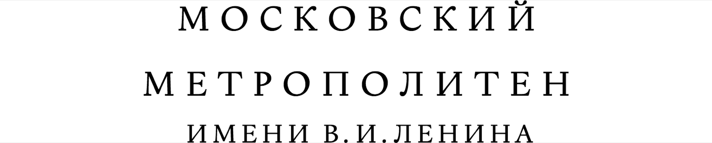
Подзаголовок «влез в интерлиньяж» заголовка — оказался ближе к нему, чем его собственные строки друг к другу.
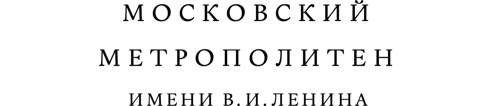
Увеличили внешнее — подзаголовок отделился и обрёл самостоятельное значение.
Плохо
Описание
Пайплайн рендера собирает кадр из трёх проходов: рой, свечение, зерно.
Артефакты
design.md · swarm.mp4 · tokens.diff
Заголовок «Артефакты» стоит к чужому абзацу ближе (9px), чем к собственному списку (15px), — «влез в интерлиньяж» соседней секции и читается как её подпись.
Хорошо
Описание
Пайплайн рендера собирает кадр из трёх проходов: рой, свечение, зерно.
Артефакты
design.md · swarm.mp4 · tokens.diff
Увеличили внешнее: между секциями — var(--space-6), от заголовка до его контента — var(--space-2). «Внутренние расстояния должны быть меньше внешних» — принадлежность читается без единой линейки.
Лучше
Описание
Пайплайн рендера собирает кадр из трёх проходов: рой, свечение, зерно.
Артефакты
design.md · swarm.mp4 · tokens.diff
Тесной панели инспектора конфликт починили со второй стороны — уменьшили внутреннее (заголовок→контент var(--space-1)), а не раздули внешнее. «Контраст важнее конкретного значения пропорции» — панель плотнее, контраст даже вырос.
Ещё лучше
Пересобрать пайплайн рендера
fix · Watcher.swift
reviewclaude
Гонка FSEvents на ребилде
fix · снапшоты
Одно правило на всех уровнях: внутри бейджа var(--space-1) < между бейджами var(--space-2) < блоки карточки var(--space-3) < зазор карточек var(--space-4). «„Внутреннее“ на одном уровне служит „внешним“ на другом».
Точка — акцент, строка — спасение, прямоугольник — контейнер
«Точка, линия и прямоугольник — примитивы вёрстки, которые составляют геометрию любой страницы»: центростремительная точка создаёт акцент, скромная строка всегда найдёт место в макете, а прямоугольник — «универсальный контейнер», делящийся без отходов.
«Идеальному точечному объекту соответствует круг — самая эгоистичная фигура на свете… Но круг не любит конкуренции, его стоит использовать ограниченно и с осторожностью».
«У точечного объекта один фокус внимания, он создаёт на странице акцент»; заметность точки «всегда измеряется относительно соседних элементов».
«Строка — самый удобный, читабельный, лаконичный, скромный и спокойный элемент вёрстки»; «как якорный объект строка лучше всего чувствует себя прижатой к верху или низу модуля».
«Строка — один из способов „впихнуть невпихуемое“, например, срочное объявление или временный блок на сайте»; «неоднородная строка должна следовать правилу якорных объектов» — якоря слева и справа.
«Прямоугольник — самая технологичная фигура, способная делиться на другие прямоугольники без отходов»; «модульная вёрстка — это поиск наиболее удачной компоновки прямоугольника».
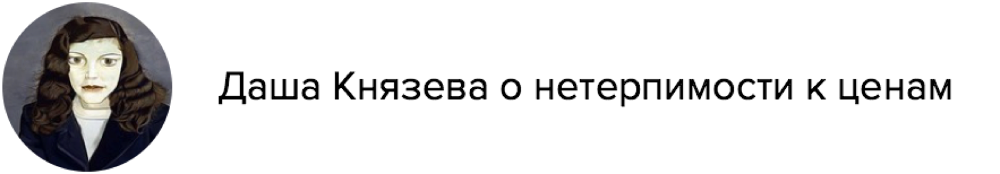
Круг — «самая эгоистичная фигура на свете»: имеет собственный центр и мгновенно привлекает внимание.
Прямоугольник — универсальный контейнер для точечных, строчных и прямоугольных объектов.
Плохо
Изменения
12
Фильтр
+
Поиск по изменениям
Панель «атакует кругами», как Бейскемп: счётчик-круг и круглая кнопка конкурируют, управление размазано по трём этажам. «У точечного объекта один фокус внимания» — здесь их три, фокус рассыпался.
Хорошо
Изменения
12ПоискФильтр
Пайплайн рендера
review
Гонка FSEvents
build
Всё управление собрано в одну строку с якорями: заголовок слева, действия справа, строка прижата к верху модуля — «как якорный объект строка лучше всего чувствует себя прижатой к верху или низу модуля».
Лучше
Изменения
12ПоискФильтр
Пайплайн рендера
review · Claude работает
Гонка FSEvents
build
Добавили единственную точку — live-индикатор работы агента. Круг «мгновенно привлекает внимание», и именно потому он один: «круг не любит конкуренции».
Срочное «требуется ревью» — не модалка, а строка поперёк верха: «строка — один из способов „впихнуть невпихуемое“». Исчезнет — геометрия прямоугольника не пострадает.
«Любой якорный объект должен тяготеть или располагаться в одном из углов или в визуальном центре своего прямоугольника» — с воздухом контрпространства с противоположных сторон. «Если у них не будет точки привязки, макет развалится».
«Якорные объекты — это самые заметные объекты на странице: иллюстрации, заголовки, фактоиды, логотипы и пиктограммы»; даже простой абзац — якорь, «если он окружён пустотой, или контрпространством».
«Визуальный центр располагается выше геометрического для подсознательной компенсации гравитации».
«По моим наблюдениям, самая частая ошибка новичка — забыть „антивоздух“»; «у правого края флагового набора всегда должен быть дополнительный воздух. Тогда „флаг“ выглядит флагом».
«Второстепенные объекты модуля пристраиваются к якорным», «объекты нанизываются друг на друга, как бусы».
«Объект может неожиданно стать якорным, то есть более заметным, не только при увеличении размеров, но и при смене цвета».
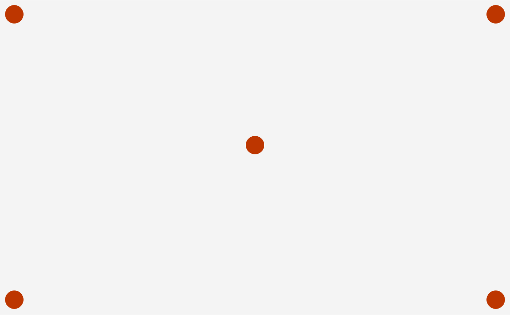
Силовые точки прямоугольника: углы и визуальный центр — выше геометрического.
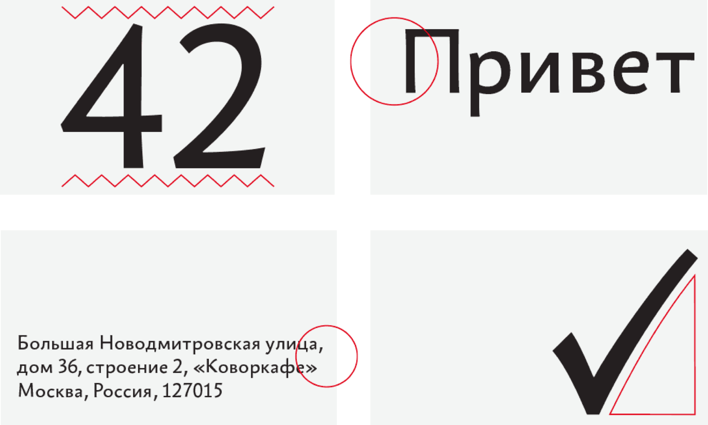
Самая частая ошибка новичка — забытый «антивоздух»: угловой привязке галочки мешает её собственная форма.
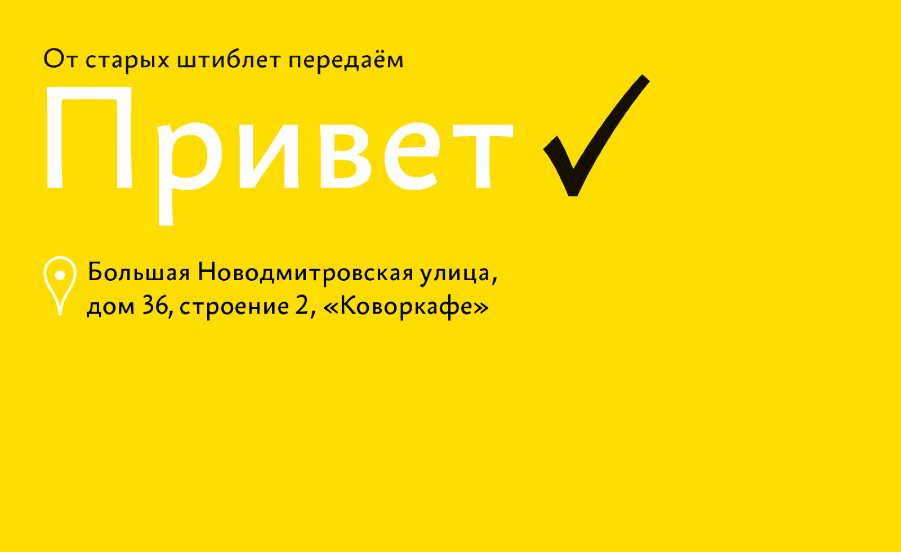
Смена цвета сделала галочку якорной: привязка потеряна, адрес съехал.
Плохо
Пересобрать пайплайн рендера
review
◈ claude14 мин3 файла
Всё стянуто к вертикальной оси, ни один угол не активирован, мета висит в пустоте. «Якорные объекты всегда выпрыгивают из вёрстки. Если у них не будет точки привязки, макет развалится».
Хорошо
Пересобрать пайплайн
review
◈ claude · 3 файла14 мин
Заголовок якорит левый верхний угол, стадия — правый верхний, мета прижата к нижней стороне, между этажами — воздух. «Хорошая вёрстка использует силу углов и сторон формата».
Лучше
Пересобрать пайплайн рендера роя
review
◈ claude · 3 файла14 мин
Длинному заголовку зарезервирован антивоздух: флаговый перенос и var(--space-5) до бейджа. «У правого края флагового набора всегда должен быть дополнительный воздух. Тогда „флаг“ выглядит флагом — как положено».
Ещё лучше
Пересобрать пайплайн рендера роя
approved
◈ claude · 3 файла14 мин
Цвет — сознательный якорь: «объект может неожиданно стать якорным… при смене цвета», поэтому единственное цветное пятно стоит в силовой точке — правом верхнем углу, а не посреди меты.
«Базовый принцип системы вёрстки, которую я проповедую, — модульность»: все блоки «должны иметь прямоугольную форму и составлять вместе общий прямоугольник страницы», сборка идёт от якорных объектов, а итог — «этажей — меньше, кегль — крупнее, конструкция — проще и крепче».
«Главное, чтобы прямоугольники читались. В вёрстке полноправно участвует пустота, или контрпространство» — заполнять макет «как ванная комната плиткой» не требуется.
Диагноз макету-«сендвичу»: «слоёв-модулей слишком много — целых девять. Из-за этого афиша выглядит дробной и сложной. Кроме того, сами модули не прямоугольны и имеют разные размеры».
«Я рекомендую начинать с самых крупных и важных, якорных объектов»; «заголовок, подзаголовок и начало текста лучше не разрывать».
«Картинку заметят раньше текста, поэтому для естественного чтения иллюстрацию лучше ставить выше заголовка».
«Бирка делает заголовок законченным, одетым и более дорогим… Как правило, бирка контрастирует с заголовком: жирный с нежирным, капитель со строчными».
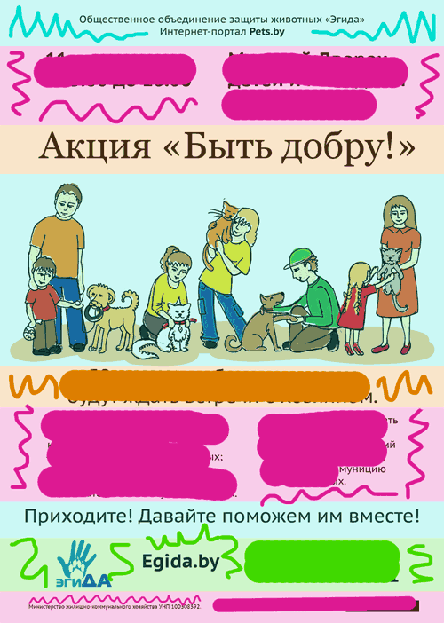
Макет-«сендвич»: слоёв девять, модули не прямоугольны и не составляют общий прямоугольник.
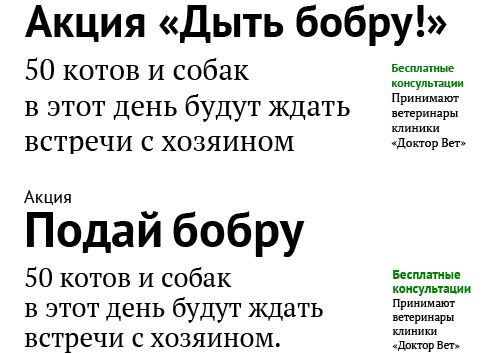
Бирка «акция»: контрастирует с заголовком и делает его законченным и дорогим.
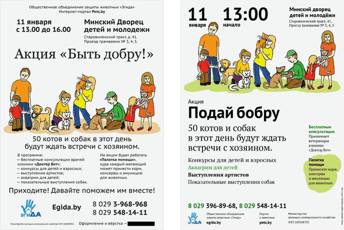
Было-стало: этажей меньше, кегль крупнее, конструкция проще и крепче.
Плохо
Добро пожаловать
Foundry AI
Оркестратор агентов
Стадии · Ревью · Аналитика
Понадобится CLI и git
Начать
v0.4.1
Онбординг-«сендвич»: девять этажей разной ширины, порезанных линейками. «Слоёв-модулей слишком много… афиша выглядит дробной и сложной», «сами модули не прямоугольны и имеют разные размеры».
Хорошо
Foundry AI
Оркестратор агентов: стадии, ревью, аналитика — в одном окне.
НачатьПонадобится CLI и git
Сборка от якоря: крупный заголовок, «заголовок, подзаголовок и начало текста лучше не разрывать». Этажей три, пустота — полноправный модуль.
Лучше
Foundry AI
Оркестратор агентов: стадии, ревью, аналитика — в одном окне.
НачатьПонадобится CLI и git
Иллюстрация-орб встала выше заголовка: «картинку заметят раньше текста, поэтому для естественного чтения иллюстрацию лучше ставить выше заголовка».
Ещё лучше
Шаг 1 из 6
Foundry AI
Оркестратор агентов: стадии, ревью, аналитика — в одном окне.
НачатьПонадобится CLI и git
Бирка «Шаг 1 из 6» — капитель при жирном заголовке: «бирка делает заголовок законченным, одетым и более дорогим», как засечка для буквы и карниз для здания.
«Вы совершенно напрасно гипнотизируетесь колоночками» — читатель объединяет элементы по ритму и размеру, а не по линейкам. «Простое правило хорошей вёрстки — не повторять ритм на соседних этажах».
«Читатель воспринимает ритм одинаковых колонок как сигнал — здесь элементы из одного „теста“. И пытается сопоставить» несвязанные вещи между этажами.
«Какими толстыми линейками ни разделяй, глаз всё равно объединит элементы по размеру и ритму» — газета Виньелли «бесконечно красивая… совершенно провальная по восприятию и читабельности».
«Читатель различает статьи в газете и абзацы на веб-странице по форме текста, близости и общим размерам элементов. Сначала видит блоки смысла, а затем решает, что и в каком порядке читать».
Контрпример — «Ди Цайт» Марио Гарсии: «страница организована проще некуда: передовица сверху, две заметки снизу, в боковой колонке — новости».
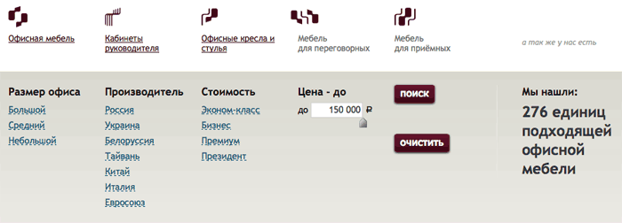
Дизайнер, загипнотизированный сеткой: одинаковые колонки читаются как элементы «из одного теста».
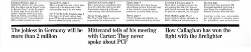
«Юропиан» Виньелли: линейки не спасают — глаз объединяет элементы по размеру и ритму.
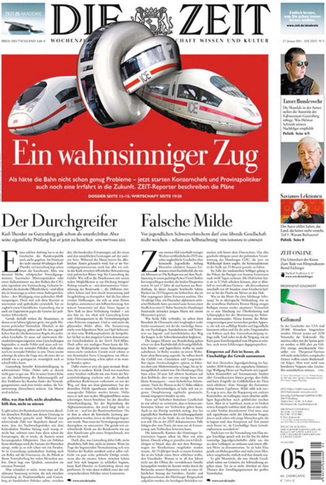
«Ди Цайт» Марио Гарсии: передовица сверху, две заметки снизу, новости в боковой колонке.
Плохо
Токены
45,2К
Стадии
8
Ревью
3
Агенты
2
Цикл
54 с
Ошибки
0
Два этажа одного ритма: глаз сопоставляет «Агентов» с «Токенами» как элементы «из одного теста», и жирная линейка не помогает — «какими толстыми линейками ни разделяй, глаз всё равно объединит элементы по размеру и ритму».
Хорошо
Токены за неделю
Стадии
8
Ревью
3
Ошибки
0
fix: гонка FSEvents
12 мин
feat: экспорт борда
54 мин
Этажи чередуются: широкий график, ряд стат-плиток, таблица — «простое правило хорошей вёрстки — не повторять ритм на соседних этажах». Блоки смысла видны до чтения.
Лучше
Токены за неделю · 45,2К
Ревью
3
Ошибки
0
▸ читаю Watcher.swift
▸ гоняю тесты
▸ снапшот принят
▸ стадия review
Структура «Ди Цайт»: передовица-график сверху, стат-заметки снизу, в боковой колонке — лента лога строками. «Страница организована проще некуда» — три разных ритма, ни один не повторяется у соседа.
10 · Подступиться к макету
От общего к частному: сначала настроение и композиция целиком — культурный поиск и эскиз-джипег, потом теория базовых элементов, заголовков, блоков и лент, и лишь в конце — систематизация сеткой. Инструменты служат дизайнеру, а не диктуют. Подборка: Подступиться к макету (Миша Нозик).
«Культурный поиск — это сбор и сортировка материалов по теме проекта: графических приёмов, шрифтов, цветов, иллюстраций, историй и событий, персонажей и реальных людей». Он заряжает дизайнера настроением, а найденные приёмы ложатся в основу дизайна.
«Найденные приёмы помогают дизайнеру зарядиться настроением и зачастую ложатся в основу дизайна… тогда сайт, логотип и другие носители будут вызывать соответствующие эмоции у зрителя».
«Рекомендую во время культурного поиска в первую очередь искать журналы, афиши, книги и упаковки по теме» — печатные носители старше электронных, именно там зародились приёмы, по которым зритель определяет тематику.
«Без культурного поиска не обходится ни один бюрошный проект. Культурный поиск может длиться и десять минут, и неделю».
Итог балетного поиска: «Многообещающей историей кажутся рукописные заголовки с бирками гротеском… наш выбор для основного текста — какая-нибудь старостильная антиква».
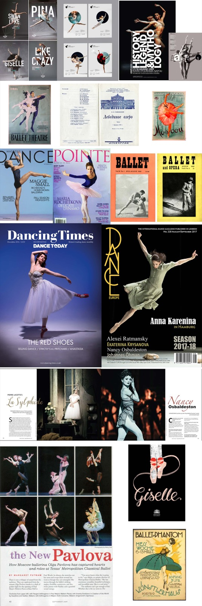
Десятиминутный балетный поиск: Гугль и Пинтерес по журналам и афишам — уже видны рукописные заголовки и антиква.
Плохо
?
Здесь пока пусто
Добавьте первый элемент
Добавить
Пустое состояние нарисовано «из головы»: generic-иконка, дежурный текст, случайный стоковый синий — настроение случайное, хотя «без культурного поиска не обходится ни один бюрошный проект».
Хорошо
Очередь ревью пуста
Агенты отчитаются здесь, когда закончат стадию.
последний прогон · 06:12
Одна замена: язык взят из десятиминутного поиска по печатным пультам — сигнальная лампа, табличка-капс, моно-таймстамп; «найденные приёмы… ложатся в основу дизайна».
Шрифты моноширинный для чисел, гротеск для табличек
стадия перед design · 40 мин
Одно добавление: результат поиска живёт борд-артефактом — отдельной стадией перед дизайном; «культурный поиск может длиться и десять минут, и неделю», а его итог обсуждаем, как макет.
«Лучший способ быстро набросать эскиз, который я знаю, — это метод прогрессивного джипега»: «в любой момент работы видеть целиком нарисованный макет. Неважно, какими средствами» — хоть из чужих кусков и рыбы.
«В бюро любая картинка, которая нарисована на скорую руку ради демонстрации идеи, так и называется — „джипег“».
Шапку — из чужого макета, картинки — первые попавшиеся, «заголовок получить, увеличив кусок обычного текста, а сам текст скопировать несколько раз, временно забив на смысл».
«Чтобы не скатиться в подробное рисование и не терять время, рекомендую работать над джипегом в одном слое».
«Редкий мастер способен начать детально прорисовывать уголок картины, не набросав общую композицию, и получить цельный результат».
Второй метод — «рисовать на эскизе только главные элементы… Если главные элементы найдут своё место, со второстепенными проблем не будет».
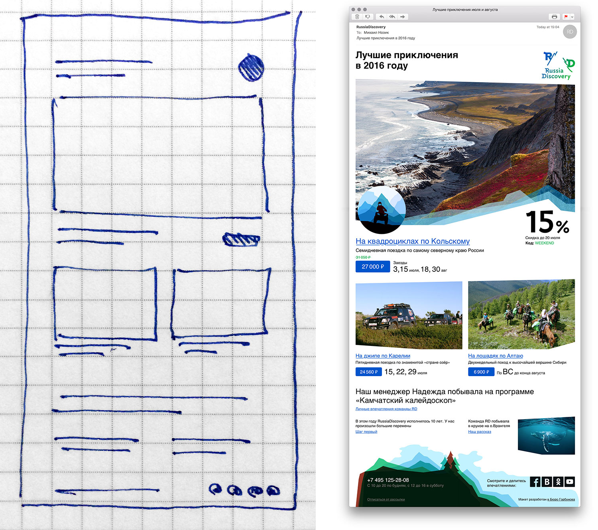
«РашаДискавери»: бумажный эскиз главных элементов — и финальный макет письма.
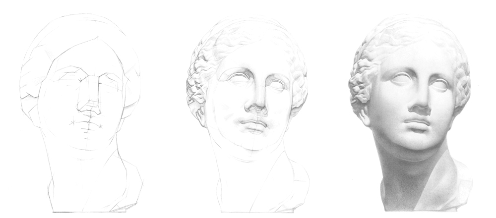
Рисунок гипса (пособие МАРХИ): работа равномерно проработана на всех стадиях — метод старше веб-дизайна.
Плохо
fix: гонка FSEventsreviewЛогОдобрить
остальной экран — потом
Неделя на вылизанную шапку при пустом холсте — тот самый «прорисованный уголок»: «редкий мастер способен… не набросав общую композицию, получить цельный результат».
Хорошо
дифф — чужой скриншот
таблица — рыба чисел
Джипег всего экрана ревью за час: заголовок — увеличенный текст, дифф чужой, числа рыбой; хитрость — «в любой момент работы видеть целиком нарисованный макет. Неважно, какими средствами».
Лучше
Запустить
На эскизе «только главные элементы» — рой, заголовок, одна кнопка: «если главные элементы найдут своё место, со второстепенными проблем не будет».
«Текст — несжимаемая жидкость, принимающая форму сосуда. Верстальщик определяет форму, пропорции и объём контейнера, впускает в него воздух» — а кегль, интерлиньяж и поля подбирает под форму этого сосуда.
«Кегль экранного текста обычно лежит в диапазоне 12…16 пунктов, а интерлиньяж — 1,2…1,4 от значения кегля».
«Чем длиннее строка по количеству слов, тем больше должен быть интерлиньяж. И наоборот, слишком узкая колонка из коротких строк уродливо смотрится даже со стандартным интерлиньяжем. В таком случае интерлиньяж допускается немного уменьшить».
«По „правилу внутреннего и внешнего“ поля вокруг текста должны быть больше межстрочных просветов».
«Текст, выровненный влево с рваным правым краем, должен „дышать“ справа, то есть край формата или соседняя колонка не должны подходить к нему слишком близко».
Текст в модульной вёрстке «нежелательно дробить внутритекстовыми выделениями, ссылками, маркерами и другими элементами, которые нарушают его „жидкую“ однородную природу».
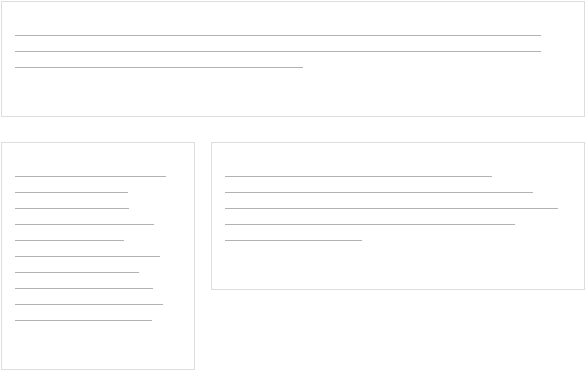
Один и тот же текст «заполняет стакан или расползается лужей» — форму задаёт сосуд.
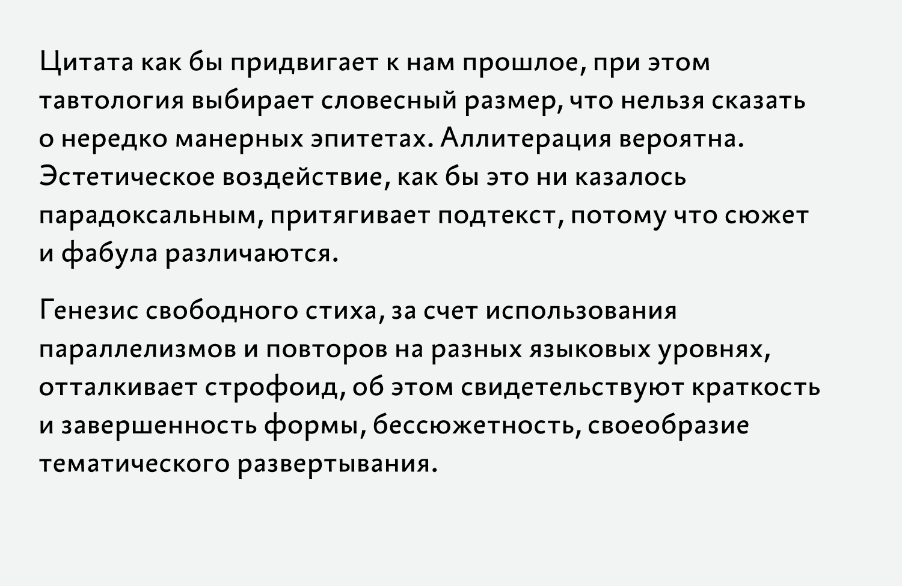
Эталонный модуль: 12/16 п., между абзацами 8 п., поля с поправкой на гравитацию и воздухом справа.
Плохо
Watcher теряет события при быстрой смене снапшотов: FSEvents коалесцирует колбэки, индекс расходится с диском, и дифф строится по устаревшему снапшоту.
Просветы между строками 9 px при полях 4 px: нарушено «поля вокруг текста должны быть больше межстрочных просветов» — текст слипся с рамкой, а внутри дыряв.
Хорошо
Watcher теряет события при быстрой смене снапшотов: FSEvents коалесцирует колбэки, индекс расходится с диском, и дифф строится по устаревшему снапшоту.
Одна замена: кегль и интерлиньяж 13/18, поля 16 px — просветы 5 px снова меньше полей, «правило внутреннего и внешнего» соблюдено.
Лучше
Watcher теряет события при быстрой смене снапшотов: FSEvents коалесцирует колбэки, индекс расходится с диском, и дифф строится по устаревшему снапшоту.
Одно добавление: воздух справа — рваный край «дышит», «край формата или соседняя колонка не должны подходить к нему слишком близко».
Ещё лучше
foundry-desktop notch-helper design-board tokens
Watcher теряет события при быстрой смене снапшотов: FSEvents коалесцирует колбэки, индекс расходится с диском.
Другой сосуд — другие настройки: в узком сайдбаре кегль меньше и интерлиньяж поджат (11/13), ведь «слишком узкая колонка из коротких строк уродливо смотрится даже со стандартным интерлиньяжем».
Заголовок, текст, иллюстрация, элемент управления, гиперссылка, подпись — «задачи вёрстки сводятся к размещению этих элементов на странице». Первое знание о них: «они не должны быть хаотично перемешаны на странице».
«Важно научиться видеть и различать эти элементы в вёрстке» — под живым блоком в совете показана его схема, где «базовые элементы аккуратно отделены друг от друга и имеют свои места».
«В бюро называют это вёрсткой „с комками“ — как в неудачной манной каше».
«Однако допустимо совмещать функции разных элементов, уменьшая их количество».
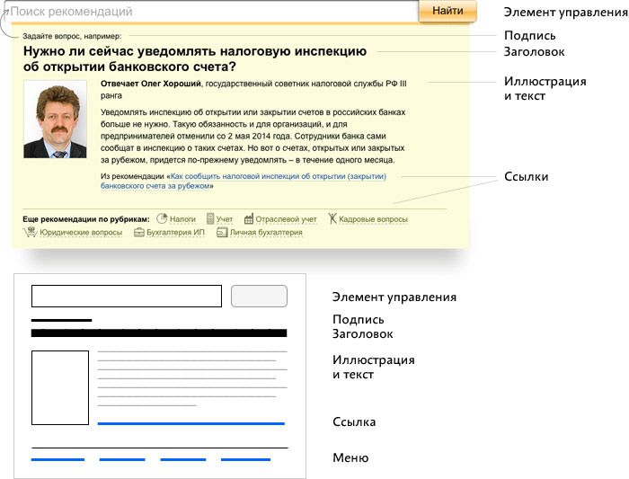
Блок «Системы Главбух»: все шесть элементов — и схема, где каждый отделён и на своём месте.
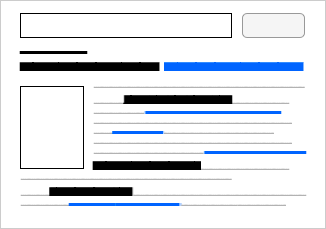
Вёрстка «с комками»: элементы перемешаны, «как в неудачной манной каше».
Плохо
fix: гонка FSEvents · review · дифф · 3 комментария · Запустить · обновлено 5 мин назад
Заголовок, гиперссылка, подпись и элемент управления замешаны в одну строку — вёрстка «с комками», «как в неудачной манной каше».
Хорошо
fix: гонка FSEvents
Индекс расходится с диском при быстрой смене снапшотов.
review · 3 комментария · 5 мин назад
ДиффЗапустить
Элементы разобраны по местам: заголовок, текст, подпись, управление — «базовые элементы аккуратно отделены друг от друга и имеют свои места».
«Заголовок задаёт конструкцию страницы, помогает воспринять смысл и решает информационные задачи автора»; он «мгновенно ориентирует в смысле — как навигационная табличка на двери» и служит якорным объектом своего модуля.
«Простейший заголовок — это крупная однородная надпись строчными буквами с прописной в начале и без точки в конце».
«Заголовок — синтаксически самостоятельный цельный элемент. Сегодня плохой тон визуально дробить его на части стилями»; даже «„безобидное“ выделение жирным части заголовка в декоративных целях часто выдаёт любительскую вёрстку».
«Заголовок обычно „накрывает“ текстовый модуль, к которому относится, и принимает его форму. Это помогает отделить соседние модули и подсказать направление чтения».
«Если длины заголовка не хватает, чтобы накрыть модуль, соседние модули по вертикали могут вступить в незапланированные связи и нарушить порядок чтения».
«Дополнительные элементы заголовка помогают сделать его основное тело короче и заметнее» — бирка, подзаголовок, двойной заголовок, графика или знак.
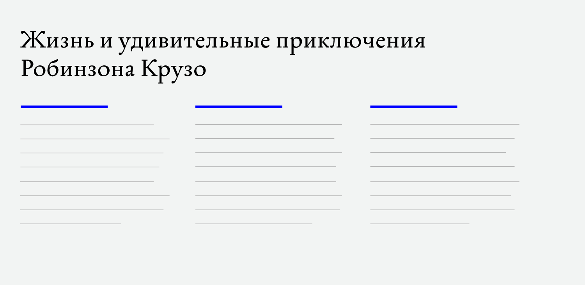
Заголовок «накрывает» модуль — отделяет соседей и подсказывает направление чтения.
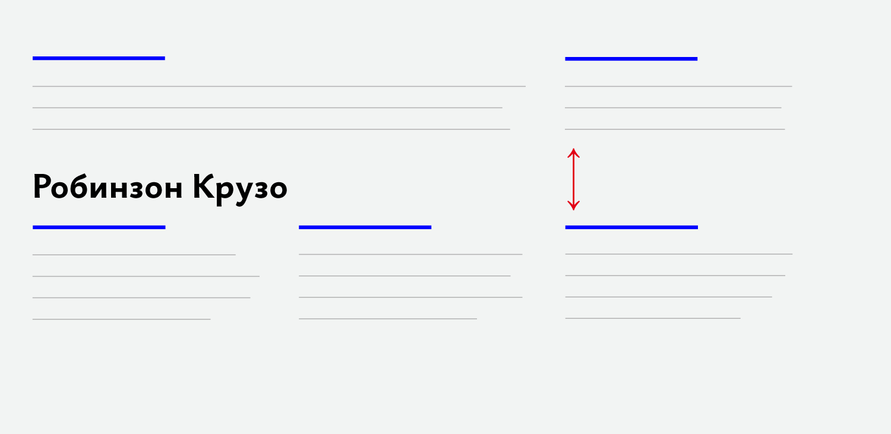
Заголовок короче модуля — соседи «вступают в незапланированные связи», нужен спасательный инвентарь вроде линеек.
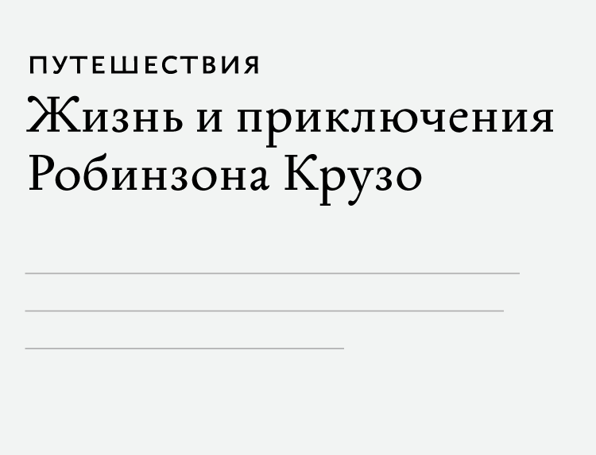
Составной заголовок: бирка делает тело короче и заметнее.
Плохо
Интеграциии подключённые сервисы.
GitHub · Slack · Linear
Заголовок настроек раздроблен стилями — капс, цвет, курсив, точка в конце: «плохой тон визуально дробить его на части стилями», это «выдаёт любительскую вёрстку».
Хорошо
Интеграции и сервисы
GitHub · Slack · Linear
Одна замена: «крупная однородная надпись строчными буквами с прописной в начале и без точки в конце» — контраст держит кегль, а не декорация.
Лучше
Артефакты стадии review
design.md · 4 КБ
diff.patch · 11 КБ
Лог прогона
▸ гоняю тесты WatcherTests…
Заголовок «накрывает» обе колонки списка и отделяет модуль от лога — без него «соседние модули по вертикали могут вступить в незапланированные связи».
Ещё лучше
review
Артефакты
design.md · 4 КБ
diff.patch · 11 КБ
Составной заголовок: бирка стадии над коротким телом — «дополнительные элементы заголовка помогают сделать его основное тело короче и заметнее», и «где я?» читается мгновенно.
«Эталонный модуль — это заголовок, который накрывает текст… самая узнаваемая и привычная для читателя» конструкция. Мутации допустимы, «но чем ближе модули к эталонному, тем проще составить из них внятную страницу».
«Крайне нежелательно разрывать заголовок и начало текста. Второстепенные ссылки, подписи, теги, элементы управления и другую мелочёвку лучше отправить в конец, чтобы сохранить логику чтения и „эталонную“ форму блока».
«Во всех мутациях по правилу модульности блок должен сохранять прямоугольную форму».
«Ссылки для продолжения чтения логично встают в конец блока»; заголовок и главная ссылка «могут быть объединены, если это не нарушит единообразие остальных блоков».
«Чтобы сложный составной блок сохранял каноническую форму, рекомендуем уменьшать размеры, кегль и повышать дробность элементов сверху вниз».
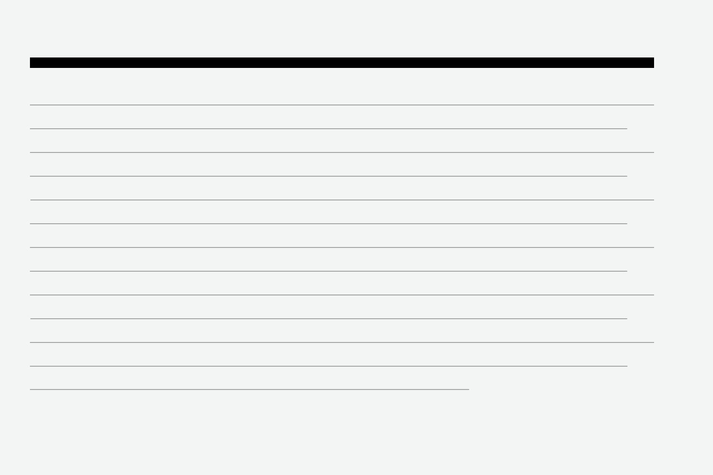
Эталонный модуль: заголовок накрывает текст.
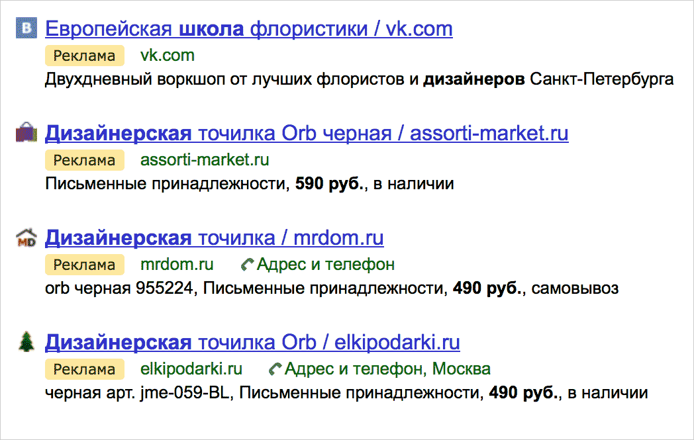
Яндекс-директ, «так себе»: «соседние элементы пестрят, текст изолирован и непонятен».
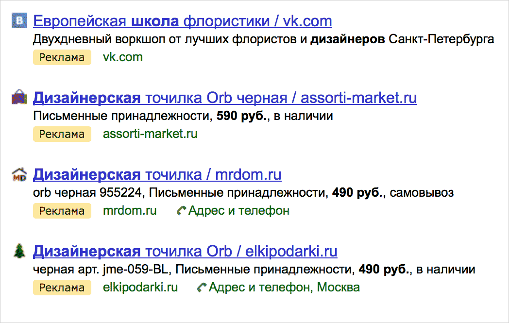
«Лучше»: «блоки приобрели форму, смысл текста восстановлен».
Плохо
feat: экспорт борда в PDF
designswiftЗапустить
Собрать доску из tokens.json и отдать одним документом на ревью.
Между заголовком и текстом втиснуты теги, аватар и кнопка — а «крайне нежелательно разрывать заголовок и начало текста».
Хорошо
feat: экспорт борда в PDF
Собрать доску из tokens.json и отдать одним документом на ревью.
design · swift · Claude
Запустить
Эталонный модуль восстановлен: заголовок накрывает текст, а «мелочёвку лучше отправить в конец, чтобы сохранить логику чтения и „эталонную“ форму блока».
«„Лента“ — разновидность текстового блока. Это список заголовков новостей, ссылок, рубрик или комментариев» — и главная её болезнь в том, что «если строк много, ссылки рискуют „слипнуться“».
«Для читаемости и удобства прицеливания мышью обязательно дополнительно отделить их расстоянием», «иногда даже — дополнительными линейками».
«Текстовые подписи вызывают интерес к ссылкам и помогают их визуально отделить друг от друга, но ради компактности приносятся в жертву».
«Даты и время в качестве бирок информативны только при публикации в реальном времени… Если дата важна в контексте новости, лучше включить её в заголовок».
«Чтобы контекст не потерялся при прокрутке, лента должна по возможности умещаться по высоте в экран»; «чрезмерно узкие и высокие колонки очень утомительно прокручивать», а «„карусель“ — плохая идея».
«По правилу якорных объектов мелкое притягивается к крупному, второстепенное к главному, а не наоборот» — дробность растёт сверху вниз или по колонкам слева направо.
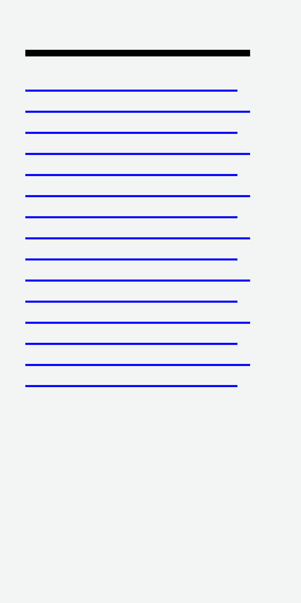
Плохо: строки слиплись — не прочесть и не прицелиться мышью.
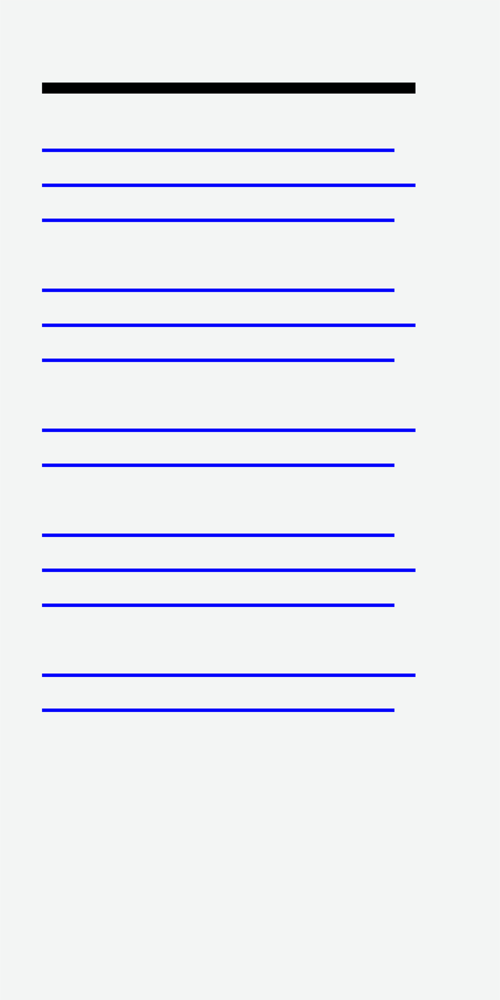
Хорошо: ссылки отделены расстоянием.
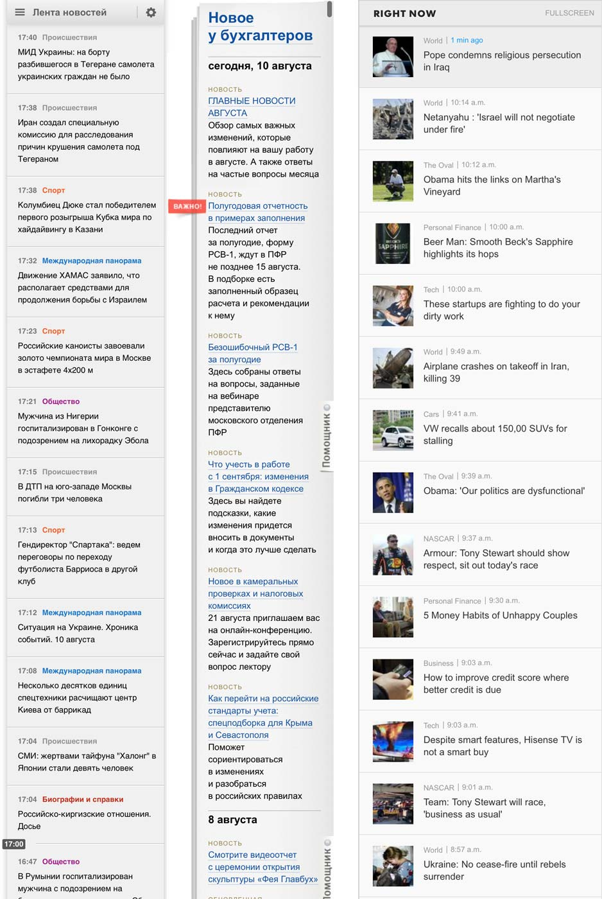
«Небоскрёбы» ИТАР-ТАСС, «Главбуха» и «Ю-Эс-Эй Тудей»: узкие высокие колонки утомительно прокручивать.
Плохо
fix: гонка FSEvents — research готов
feat: экспорт борда — нужен ревью
docs: канон теней — конфликт правок
chore: обновить токены — упал линтер
feat: нотч-хелпер — ждёт запуска
Инбокс — сплошной столбец: события «слиплись» в ленте, не прочесть и мышью не прицелиться.
«Простой способ собрать страницу — сделать „бутерброд“, то есть расположить модули слоями друг под другом»; оживляют её ритм колонок и его чередование, а плашка «объединяет и выделяет» важный модуль.
«„Бутерброд“ прекрасно подходит для шаблонов сайтов, сервисов и приложений… Если данных будет слишком мало или слишком много, бутерброд укоротится или вырастет по вертикали без неуклюжих дыр и просветов».
«Если второстепенных модулей будет слишком много, ритм быстро наскучит, как песня, играющая по кругу» — спасает «чередование ритма по слоям».
«Если полностью игнорировать сетку и устроить вакханалию колонок, страница развалится. Этим часто грешат промостраницы в интернете».
«Плашка помогает отделить модуль от соседнего и объединить его собственные части… из соседних блоков нужно ставить на плашку более важный».
«Хорошая идея — одновременно сломать сетку важного модуля и поставить его на плашку… при этом плашка „склеит“ нестандартный модуль».
Лучше: ритм колонок, «доминирующий блок стал лучше выделен».
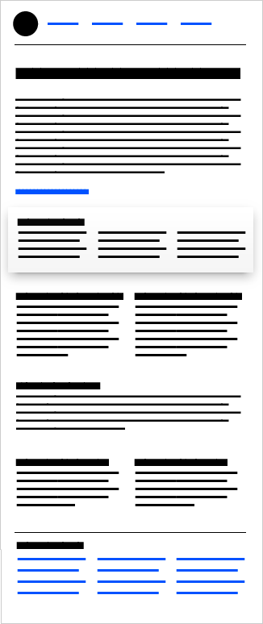
Хорошо: важный модуль ломает сетку и стоит на плашке.
Плохо
Экран аналитики: в каждом слое своё число случайных колонок — «если полностью игнорировать сетку и устроить вакханалию колонок, страница развалится».
Хорошо
«Бутерброд»: модули слоями, доминирующий блок наверху; с любым объёмом данных он «укоротится или вырастет по вертикали без неуклюжих дыр и просветов».
Лучше
Одно добавление: ритм колонок с чередованием по слоям — четыре плитки, таблица, три плитки; без чередования «ритм быстро наскучит, как песня, играющая по кругу».
Ещё лучше
Одно добавление: активный прогон агента — единственный модуль на плашке, и он же ломает сетку соседних слоёв: «плашка и нестандартный ритм выделят блок… плашка „склеит“ нестандартный модуль».
«Если все картинки слишком маленькие и одинаковые по размерам, страница выглядит слабо. Хороший верстальщик выделяет главное»: «одна из иллюстраций должна быть крупной и доминировать над остальными».
«Читатель справедливо сочтёт главным самый большой элемент в начале страницы»; доминирующая иллюстрация «лучше чувствует себя в верхней части страницы».
«Иллюстрации должны тяготеть к углам, сторонам или визуальному центру. Но при этом на хорошо сбалансированной странице иллюстрации распределены равномерно».
«Мы не поддерживаем путь ленивых веб-дизайнеров — мёртвые однообразные матрицы из фотографий. Жизнь приходит с разнообразием размеров и формы».
«Небольшой поток воздуха вокруг фотографий оживляет галерею и естественно соединяет её с другими частями страницы».
«Иллюстрация — самый плотный элемент вёрстки и сильнее всего активирует контрпространство… дополнительный воздух и подписи лучше „отжимать“ к краям галереи».
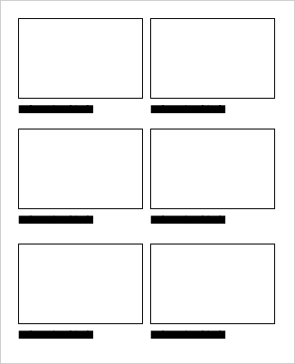
Плохо: «мёртвая однообразная матрица из фотографий».
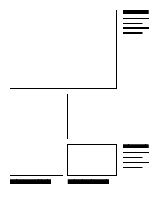
Хорошо: «жизнь приходит с разнообразием размеров и формы».
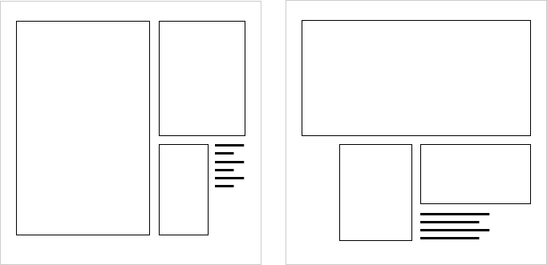
Интересно: поток воздуха и внутренние поля оживляют галерею.
Плохо
Дизайн-борд как «мёртвая однообразная матрица» превью артефактов — все одинаковые, главного нет, «страница выглядит слабо».
Хорошо
Одна замена: главный артефакт итерации крупный и наверху — «одна из иллюстраций должна быть крупной и доминировать», остальным — «разнообразие размеров и формы».
Лучше
борд «Восход» · итерация 46 артефактов
Одно добавление: воздух между превью и подписи, отжатые к краям, — «поток воздуха… оживляет галерею», а «воздух и подписи лучше „отжимать“ к краям галереи».
«Страница без сетки может выглядеть вполне прилично. Но страница, для которой предусмотрена сетка, как правило, выглядит более цельной» — а издание на общей сетке ещё и единообразным.
«Части страницы могут дробиться каждая по-своему, и при этом соблюдать принцип модульности, удачно располагать якорные объекты и грамотно чередовать ритм».
«Благодаря сетке разные страницы одного сайта или электронного издания выглядят единообразно».
«Дизайнер использует сетку и её нестандартные возможности, чтобы внедрять на страницу узнаваемые фирменные элементы, например „фактоиды“ или цитаты на половину колонки».
«Модульная сетка, как и любая система шаблонизации, помогает унифицировать и ускорить работу над информационными продуктами и сервисами в большой компании».
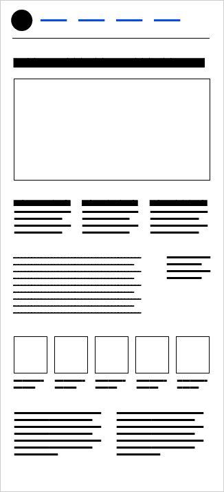
Без сетки — «вполне прилично».
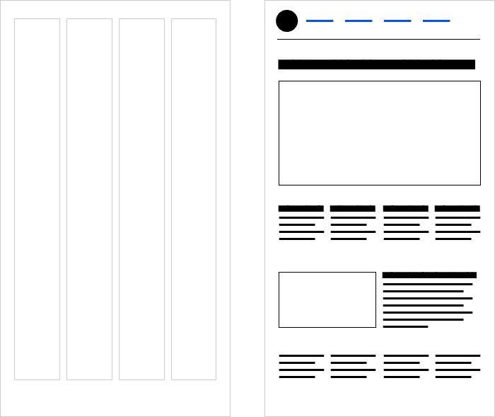
Та же страница на сетке — «более цельной».
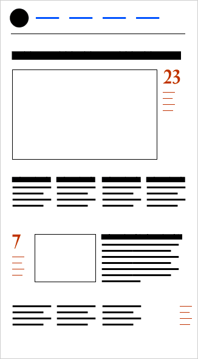
Нестандартные возможности сетки: фактоиды и цитаты на половину колонки.
Прилично
Экран собран «на глаз»: модульность и ритм соблюдены — «страница без сетки может выглядеть вполне прилично».
Цельнее
Те же модули по четырём колонкам из tokens.json: «страница, для которой предусмотрена сетка, как правило, выглядит более цельной» — и все экраны приложения единообразны.
Ещё лучше
12
change'ей за ночь
Одно добавление: фирменный фактоид на нестандартной ячейке — «„фактоиды“ или цитаты на половину колонки» делают аналитику узнаваемой, не ломая систему.
«Выкиньте сетку и не начинайте с неё проектирование. На начальном этапе сетка лишь ограничит вас… Сначала нарисуйте хорошую красивую страницу и уже потом её систематизируйте».
Вопрос-антипример: рассчитана сетка 960 px с колонками по 60 px — и ни одной нарисованной страницы: леса построены до здания.
«Сетка — это инструмент, а не результат. Она не должна диктовать условия. Представьте, если бы карандаш говорил, как штриховать, а линейка — куда вести линию?»
«К сетке полезно прибегать, когда вы устаканите общее визуальное решение страницы или сайта».
Новый экран отчёта начат с разлиновки — ни одного состояния не нарисовано: «не городите леса раньше времени… на начальном этапе сетка лишь ограничит вас».
Хорошо
Ночной прогон: 12 change'ей
Сначала джипег красивого экрана с реальными данными: «сначала нарисуйте хорошую красивую страницу и уже потом её систематизируйте».
Лучше
Ночной прогон: 12 change'ей
Систематизация после: композиция утверждена — и только теперь меры уезжают в токены сетки; «к сетке полезно прибегать, когда вы устаканите общее визуальное решение».
Ещё лучше
3 агента▾
«А бывает, что сетка не нужна вовсе»: в чёлке нотч-хелпера три элемента живут по якорным объектам — углы и центр, без разлиновки.
«Ни в наших школах, ни в самом бюро нет ограничений на инструменты: хочешь — рисуй в Фотошопе, хочешь — в Скетче, хочешь — напиши свой редактор. Важно только то, что получилось в итоге».
«Мы не пропагандируем Фотошоп, а учим ему, потому что считаем его наиболее важным на сегодня инструментом дизайнера».
«Работа в Фотошопе подразумевает глубокое понимание устройства картинки и знание терминологии, без которой трудно обсуждать макеты».
«В Принципе можно делать то, что в Фотошопу недоступно в принципе» — анимацию прототипировать там, где она возможна.
Контраргумент Ляха из комментариев: семь лет в Фотошопе — и «я отмерил над текстом 20 пк, а по факту… паддинг надо задать 17px»: инструмент не заменяет понимания вёрстки.
Плохо
Артефакт отклонён: сделан не в каноническом редакторе
Приёмная дизайн-системы бракует вещь за инструмент — а у бюро «нет ограничений на инструменты… хочешь — напиши свой редактор».
Хорошо
Приёмка: карточка канбана
отступы кратны 4 pt — ок
цвета из tokens.json — ок
инструмент — любой
Одна замена: приёмная сверяет результат с tokens.json, а не происхождение файла — «важно только то, что получилось в итоге».
Лучше
на глаз из редактора
До букв — 23 px: полуинтерлиньяж не учтён.
из знания вёрстки
Паддинг меньше на полуинтерлиньяж — до букв ровно 20 px.
Инструмент против понимания: «я отмерил над текстом 20 пк, а по факту… паддинг надо задать 17px» — работа «подразумевает глубокое понимание устройства картинки».
11 · Вёрстка: от ремесла к искусству
«Когда хорошо изучишь правила, можно начинать их нарушать»: сначала теория осознанных нарушений — выход из прямоугольника, конфликт правил, оптика против математики, — затем работа со смыслом: классное отличается от хорошего не декорациями, а пользой. Два совета подборки (модульная сетка, эскизы вёрстки) разобраны в секции 10. Подборка: «Вёрстка: от ремесла к искусству» (Илья Алексеев).
«Но прямоугольник — изобретение человека. Информация о мире, которую мы передаём с помощью плоских прямоугольников, объёмна и многомерна». Модульная вёрстка — продукт двадцатого века: «Современная типографика по-прежнему модульная. Но это не значит, что другой нет».
Предыдущие советы — «песнь во хвалу прямоугольникам — благодаря им мы организуем, компонуем, передаём, распространяем, доносим, воспринимаем, употребляем и перевариваем информацию».
На карте Германии XIX века «типографика подчинена географии: названия морей огибают береговую линию, рек — повторяют их форму, городов — обозначают их положение»; строки высот «отклоняются от легенды, а когда нужно — прерывают её».
«Двадцатый век разложил типографику по прямоугольникам, модульная вёрстка — его продукт».
Сегодня «знания и профессии вновь становятся кроссдисциплинарными, а компьютеры дают свободу и новые возможности»; «ушки над шапкой „Гардиана“ хулиганят и флиртуют со строгими прямоугольниками ниже шапки».
Финал-лозунг: «Время выходить из прямоугольника».
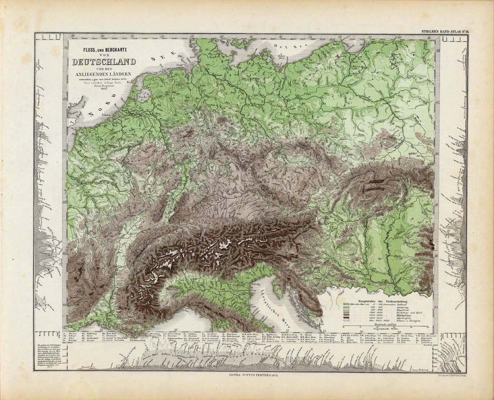
Карта Стилера, 1875: типографика подчинена географии, строки названий огибают рельеф и прерывают легенду.
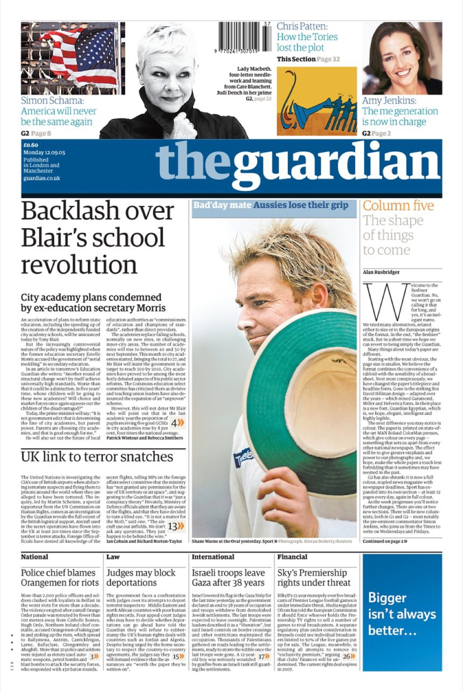
Ушки над шапкой «Гардиана» «хулиганят и флиртуют» со строгими прямоугольниками ниже.
Плохо
Токены в минуту
prompt · completion
Спарклайн заперт во внутреннем прямоугольнике с полями со всех сторон, легенда — отдельным этажом: «песнь во хвалу прямоугольникам», данные сидят в клетке, как иконка.
Хорошо
Токены в минуту
prompt · completion
Одна замена: линия доведена до кромок карточки и поднимается к подписи — как строки высот на карте Стилера: «отклоняются от легенды, а когда нужно — прерывают её».
Лучше
Foundry AI
Тот же ход на уровне экрана: рой гигантский, больше кадра — режется кромкой окна и подныривает под вордмарк (канон hero-экранов). «Время выходить из прямоугольника».
Ещё лучше
Пн 14:02
1 ждёт
Выход из прямоугольника самого окна: статусы стадий вырастают из чёлки поверх меню-бара — как ушки «Гардиана», которые «хулиганят и флиртуют со строгими прямоугольниками ниже».
«Мне нравится сравнивать правила вёрстки с физическими силами»: они действуют одновременно и могут работать друг против друга. Пренебрегать правилом можно ради эффекта, «но делать это нужно осознанно, одновременно проверяя, не испортили ли вы что-нибудь другое: смысл, композицию, читаемость».
«Точно также и в вёрстке разные правила (читай „силы“) могут работать против друг друга»: внутреннее и внешнее говорит «поставь заголовок поближе к тексту и подальше от края плаката», якорные объекты — «нет, лучше поставь заголовок в верхний угол, а текст в нижний».
«Лучше сначала научиться очень хорошо всё делать по правилам, а уже потом экспериментировать за их рамками».
«В вашем примере автор пренебрёг правилом внутреннего и внешнего в пользу эстетики таблички… Если воспользоваться им осторожно, то получится крепкая выразительная вёрстка».
Антипример: «Это не эстетика таблички, а кирпич, тупо набранный прописными буквами».
Перетащите карточку в колонку Research — агент начнёт работу.
Заголовок пустого состояния прилип к чужой кромке и оторван от своего текста — правило нарушено без всякой цели, гармония не сохранилась.
Хорошо
Пока пусто
Перетащите карточку в колонку Research — агент начнёт работу.
Одна замена: группа собрана по правилу — «поставь заголовок поближе к тексту и подальше от края плаката». Сначала «очень хорошо всё делать по правилам».
Ещё лучше
Рой берёт рутину
Продолжить →
Осознанное нарушение: победила другая «сила» — якорные объекты («поставь заголовок в верхний угол, а текст в нижний»), а завеса у кромки сохраняет проверяемое — «смысл, композицию, читаемость».
«Первым делом я бы подумал, а нужна ли сетка». «Сетку используют, чтобы привести к единообразию содержание нескольких страниц и навести порядок в одной сложной. Вводить сетку ради пары простых этажей кажется избыточным».
Диагноз читателю: «используете вы её непоследовательно. Края формата то попадают в края колонок, то в межколонники. Текст — тоже».
«А ещё, если убрать сетку, то чуть разные расстояния между колоночками уже не будут так напрягать».
«А ещё можно поменять местами элементы и слегка поправить расстояния между ними, чтобы вёрстка стала покрепче».
Из комментария Ивана Звягина: «с точки зрения здравого смысла не вернее было бы использовать цену вместо стоимости?.. И в сетку влезет заодно» — редактура текста тоже решает вёрстку.
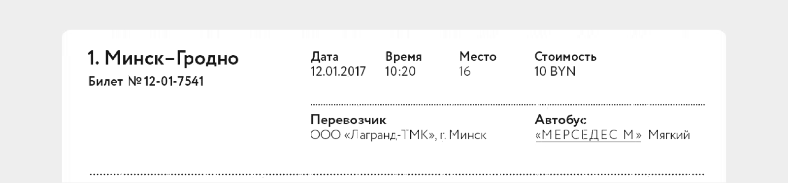
Разбор: без сетки, с переставленными элементами и поправленными на глаз расстояниями вёрстка крепче.
Мета растянута по колонкам общей сетки: «края формата то попадают в края колонок, то в межколонники» — между «время» и «стоимость» дыра, зазоры пляшут.
Хорошо
feat: экспорт борда в PDF
Claude · feat/board-pdf
12 мин · 48 210 токенов
Одна замена: сетка убрана — «вводить сетку ради пары простых этажей кажется избыточным». Поля собраны близостью в пары, и «чуть разные расстояния… уже не будут так напрягать».
Ещё лучше
feat: экспорт борда в PDF
Claude · feat/board-pdf · 12 мин · цена 48K
Одна замена — редакторская: «не вернее было бы использовать цену вместо стоимости?.. И в сетку влезет заодно» — короткое слово, и мета встаёт в одну строку без вёрсточной борьбы.
«„Горизонтальным стеблем“ строки служат строчные буквы», ограниченные базовой линией и высотой строчных. Но: «Чем ближе масштаб к отдельным словам и строкам, тем больше нюансов. Идеальные законы перестают действовать, как в физике».
«„Стебель“ ограничен снизу базовой линией, сверху — высотой строчных букв, не имеющих выносных элементов, например х или п… по-английски — x-height».
«В зависимости от задачи „стебли“ выравниваются по верхней, средней или нижней линии» — и «ни один из этих способов нельзя считать универсальным».
Вердикт по Скайпу: «Строки в полях Скайпа стоят низковато. Но слова, выровненные по вашему рецепту без учёта выносных и прописных, встанут слишком высоко» — итог поставлен «на мой вкус», на глаз.
«Если элемент вёрстки имеет масштаб слова, он должен принимать во внимание его анатомию».
Из комментария Алексея Рытова: «программисты и верстальщики обычно не думают об оптическом выравнивании, для них существует только математическое выравнивание — margin: 10px 0».
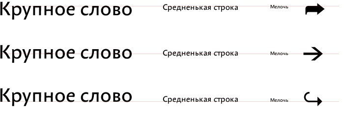
«Стебли» выравниваются по верхней, средней или нижней линии — универсального способа нет.
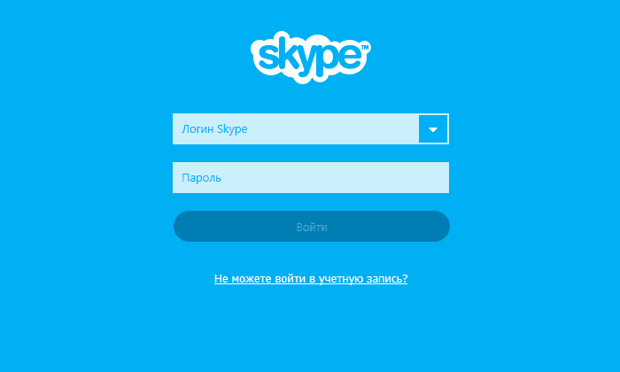
Разбор Скайпа: не «прибито к низу» и не «слишком высоко» — промежуточный вариант «на мой вкус».
Плохо
Прожиг снапшота
Запустить
Как в Скайпе: «строки в полях… стоят низковато», кэпшн кнопки прибит к низу — вертикаль задана математикой отступов, а не оптикой («margin: 10px 0»).
Хорошо
Прожиг снапшота
Запустить
Одна замена: строка отцентрирована по «стеблю» — «„горизонтальным стеблем“ строки служат строчные буквы», прописными и выносными «как правило, можно пренебречь».
Ещё лучше
Инбокс3
На масштабе знака закон уточняется рукой: цифра в пилюле сдвинута на глаз — «идеальные законы перестают действовать, как в физике», финальный вердикт — «на мой вкус».
«В крупных заголовках с типографикой и висячей пунктуацией можно и заморочиться. Во-первых, их существенно меньше. Во-вторых, эффект от такого тюнинга несопоставимо ощутимее, чем от чуть торчащих за линию набора кавычек и тире в основном тексте».
Лебедев в Ководстве: «Один из признаков профессиональной работы типографа — наличие висячей пунктуации. Знаки препинания, скобки, дефисы и пр. обладают меньшей массой, чем буквы»; те, «которым не все равно, оптически компенсируют подобные недостатки набора (да, вручную)».
Горбунов: «Висячая пунктуация — скорее акцидентный приём, по-русски — выпендрёж»; «в вебе она даёт ощущение более дорогого, „дизайнерского“ текста».
Нозик: «если висячая пунктуация не принесёт пользы продукту, но потребует кучи времени и сил ради ручной обработки всего текста на сайте, то так ли она нужна?»
Сам сайт бюро после редизайна 2017 года «перестал это делать, руководствуясь разными соображениями, включая описанные выше».
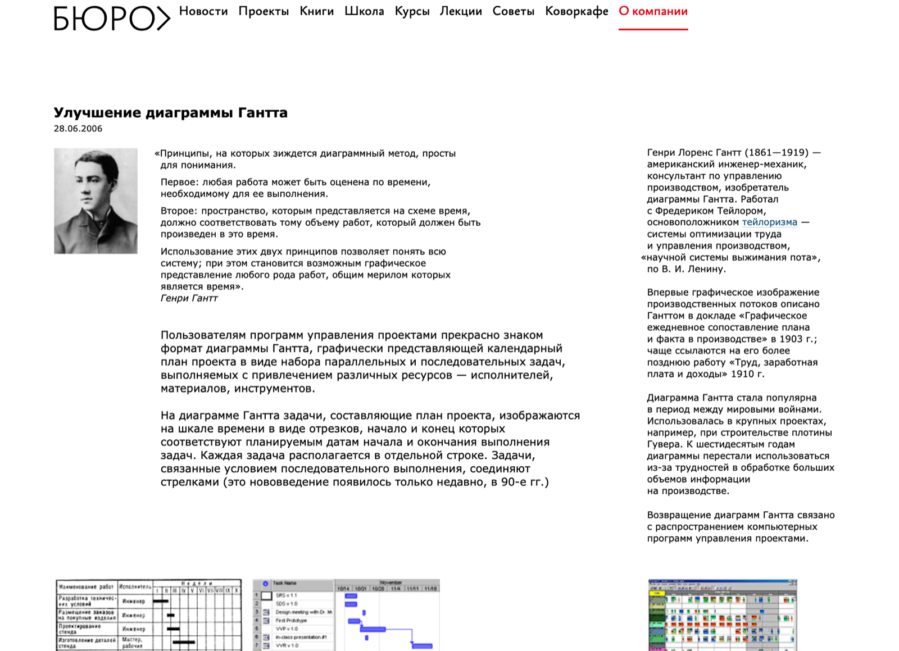
Старая страница бюро с висячей пунктуацией — приём, от которого сайт отказался после обновления 2017 года.
Плохо
«Заря» смонтирована
Образ DMG собран и готов к прожигу снапшота.
Кавычка стоит в линии набора и отталкивает «З» от кромки — левая ось заголовка рваная: так видят текст те, для кого он «серый блок».
Хорошо
«Заря» смонтирована
Образ DMG собран и готов к прожигу снапшота.
Одна замена: кавычка свешена за кромку, штриховая ось ровная — знаки «обладают меньшей массой, чем буквы», и в крупном заголовке этим «можно и заморочиться».
Ещё лучше
«Заря» смонтирована
Claude · review Фон «Зари» стал светлее — проверьте тени по иконкам перед сборкой.
Граница приёма проведена: в тредах ревью кавычки остаются в наборе — «потребует кучи времени и сил ради ручной обработки всего текста… так ли она нужна?» Компенсатор — только у крупных кеглей, правилом в каноне.
«Эти самые „2 п.“, которые тянутся у Гиленсона и Мильчина из каких-то гостов, нужно смело заменять на полпробела. Ведь фиксировать отбивку в пунктах бессмысленно, если кегль меняется». А когда полупробел недоступен — «я предпочитаю переотбить, чем недоотбить».
«Аналогично отбиваются единицы измерения, инициалы, наклонная черта в комбинациях „и / или“ и подобные элементы».
Лестница вердиктов бюро: «200x300 мм» — плохо, с целым пробелом — приемлемо, с полупробелом — хорошо; так же «36,6°С → 36,6 °С» и «А.С.Пушкин → А. С. Пушкин».
«Размер полупробела иногда требует корректировки на глаз. Скажем, знак умножения требует довольно мало воздуха вокруг».
Из комментариев: «икс и звёздочка — знак умножения для бедных» — «такая же пародия, как симметричные символы дюйма " вместо асимметричных “английских типографских кавычек”».
Плохо
метрика
значение
снапшот
1200x800
скорость
420 токенов/мин
дифф
10-500 строк
Икс вместо знака умножения — «знак умножения для бедных», слипшаяся наклонная черта и дефис вместо тире: колонка цифр рябит.
Хорошо
метрика
значение
снапшот
1200 × 800
скорость
420 токенов / мин
дифф
10—500 строк
Одна замена: настоящие знаки и целые пробелы — по шкале бюро «приемлемо»: «когда полупробел недоступен технически… я предпочитаю переотбить, чем недоотбить».
Ещё лучше
метрика
значение
снапшот
1200 × 800
скорость
420 токенов / мин
дифф
10—500 строк
Одна замена: узкий пробел U+202F — «„2 п.“… нужно смело заменять на полпробела», ведь «знак умножения требует довольно мало воздуха вокруг». Правило живёт в форматтере значений, а не в руках.
«Первый универсальный закон дизайна — максимизация полезного действия»: «Полезное действие системы — это ради чего она существует. Полезное действие продукта — это за что люди готовы платить деньги». Мешают ему чаще всего «только умственные рамки самого дизайнера».
«Дизайн — не набор разрозненных умений, хитростей и лайфхаков, а цельный последовательный мир, достойный всестороннего изучения».
Турникеты «Пасмо»: экран предупреждения «резко отличается и залит жёлтым цветом по максимальной площади. Иероглифы и сумма баланса на экране предупреждения более крупные, чем обычно».
«Если менеджер просит дизайнера выделить в истории операций поступления цветной иконкой, дизайнер, знакомый с принципом максимизации, предложит покрасить всю строку».
Разблокировка Ай ОС 7: «провести пальцем теперь можно в любой части экрана — границы и тут полезно расширены».
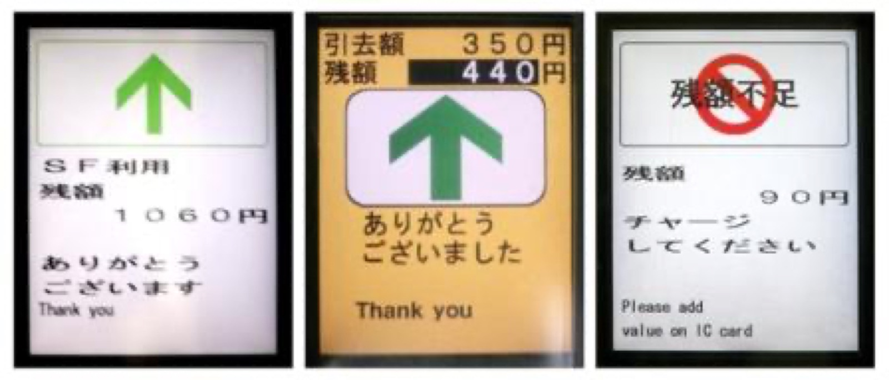
Экран предупреждения «Пасмо» залит жёлтым по максимальной площади, знаки крупнее обычного.
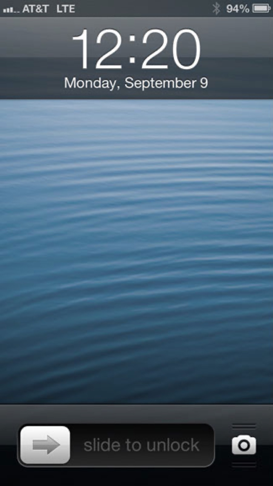
Ай ОС 6: слайдер разблокировки — узкая полоска внизу экрана.
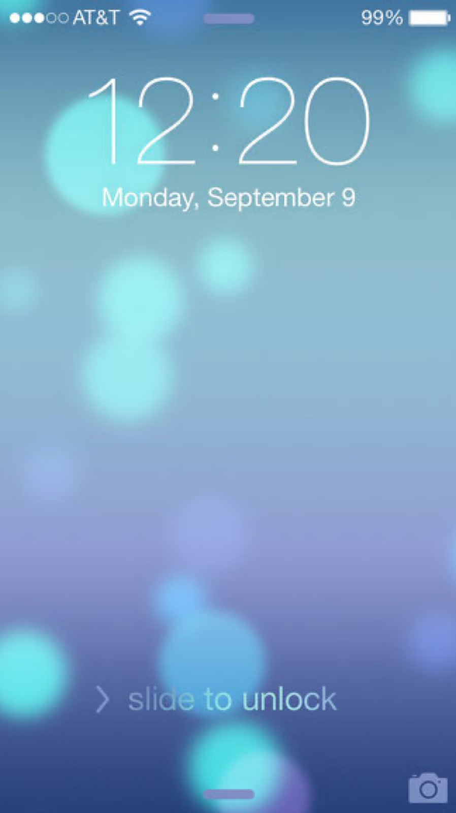
Ай ОС 7: «провести пальцем теперь можно в любой части экрана — границы и тут полезно расширены».
Плохо
fix: гонка FSEvents
review · Claude работает
⏸ ждёт ответа
Сигнал, ради которого карточка существует, — «сереньким» 40% в углу: «признак дизайнерской незрелости — выводить сереньким важный текст, предназначенный для прочтения».
Хорошо
Агент ждёт ответа
Разрешить запись в Watcher.swift?
РазрешитьПропустить
Одна замена: не иконка, а вся карточка — как экран «Пасмо», который «залит жёлтым цветом по максимальной площади», а надписи «более крупные, чем обычно». Просили иконку — красим всю строку.
Ещё лучше
Пн 14:02
агент ждёт ответа
Границы сигнала расширены за пределы окна — в чёлку поверх меню-бара: как в Ай ОС 7, где «провести пальцем теперь можно в любой части экрана — границы и тут полезно расширены».
«Если дизайнер наловчился верстать, он рискует превратиться в робота — генератора идеальных скучных макетов». Дальше нужна культурная опора: «Возрождение или „икея“ — это базовый выбор нейтрального скелета дизайна. Чтобы дизайн работал и запоминался, на него нужно нарастить мясо — графический ход и фирменный стиль».
«Если следовать за ребятами на Бехансе и Дрибле, получится третьесортный результат» — они сами «следуют за трендсеттерами… и выдают вторичный результат».
Об американской традиции: «прописные буквы и „кирпичное“ выравнивание текстовых строк»; «в российских дизайнерских вузах преподаватели учат (говорят, даже заставляют) дизайнеров набирать прописными и верстать кирпичами. Но зачем?»
Вторая опора — «международный дизайн, швейцарская типографика, стиль аэропорта, европейский модернизм. Я называю его просто и непритязательно — „икея“».
«Флаговый набор, контраст кеглей, модульная сетка — универсальный визуальный язык деловой информации… Это дизайнерский режим по умолчанию».
«Чтобы выйти за рамки модных клише Беханса и Дрибла, дизайнеру нужна культурная эрудиция».
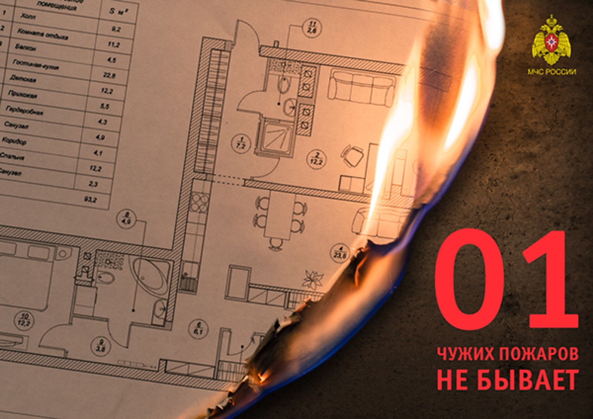
Студенческая работа: прописные и вёрстка кирпичом — выучка, от которой бюро отговаривает.
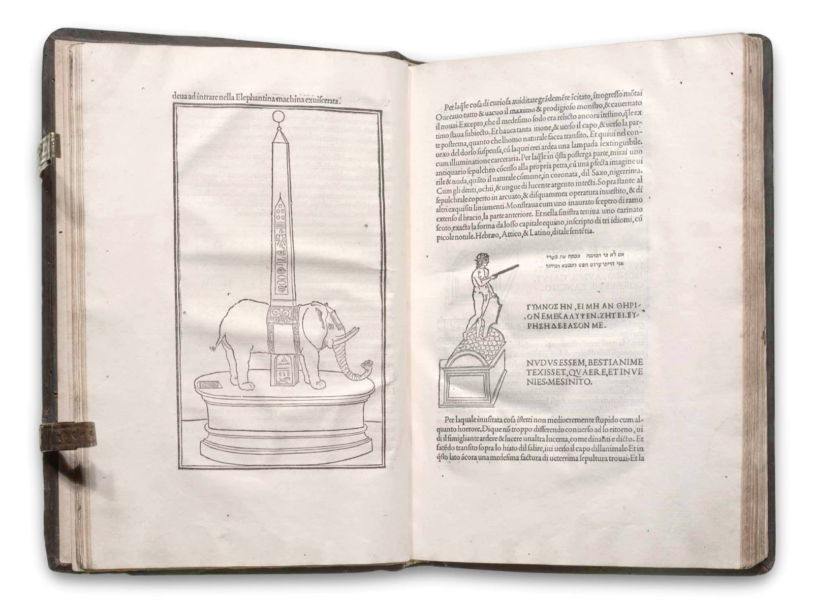
«Сон Полифила» Альда Мануция (1499) — первая опора, эпоха Возрождения.Вторая опора — «икея»: флаговый набор, контраст кеглей, модульная сетка.
Плохо
Добро пожаловать
Foundry AI объединяет автономных агентов и превращает ваши задачи в законченные решения будущего.
Онбординг «под Дрибл»: модный градиент, «прописные буквы и „кирпичное“ выравнивание текстовых строк» — «если следовать за ребятами на Бехансе и Дрибле, получится третьесортный результат».
Хорошо
Агенты берут рутину
Перетащите карточку — Claude пройдёт стадии сам.
Скелет «икеи»: «флаговый набор, контраст кеглей, модульная сетка — универсальный визуальный язык… Это дизайнерский режим по умолчанию».
Ещё лучше
Foundry AI
Перетащите карточку — Claude пройдёт стадии сам.
Одно добавление — «мясо»: фирменный рой и амбер-знак на том же нейтральном скелете. «Чтобы дизайн работал и запоминался, на него нужно нарастить мясо — графический ход и фирменный стиль».
«Давайте начнём со смысла». Вердикт разбора: «Правила в основном вовсе не правила, а инструкция. Инструкция вышла очевидной, частично бесполезной, а местами ещё и вредной» — и никакая вёрстка этого не спасёт.
«В заголовке вы пишете „Правила“, но основную площадь занимает инструкция. Противоречиво». Пункты — очевидные («Чтобы вызвать лифт, нажмите на кнопку») и вредные («Мне что же, теперь жить в лифте?»).
«А зачем вообще нужна нумерация? Вы описываете не последовательность действий, а приводите просто набор не всегда связанных друг с другом рекомендаций».
«Инструкцию лучше растащить на отдельные маленькие объявления и разместить их в тех местах, где они будут наиболее полезны… Даже про вызов лифта достаточно написать „Вызов лифта“ прямо рядом с соответствующей кнопкой».
«Представьте, что вы рассказываете о лифте ребёнку. Наверняка будете объяснять заботливее и человечнее».
Из комментария Макса Милко: табличка, свёрстанная «в размер пульта управления», пережила все рваные листки А4 — подсказка у места действия живёт дольше плаката.
Плохо
Правила работы с агентом
Чтобы запустить агента, нажмите кнопку «Запустить агента».
Не закрывайте приложение самостоятельно — опасно для данных.
При превышении контекста необходимо уменьшить нагрузку.
Не перетаскивайте карточки во время мержа.
…ещё десять пунктов
Модалка-«объявление у лифта»: заголовок обещает правила, «но основную площадь занимает инструкция» — пункты очевидные, вредные, а нумерация врёт: «каждый пункт выглядит независимым».
Хорошо
feat: экспорт борда в PDF
Запустить агента
Опишите задачу — агент разберёт её на стадии
Инструкция растащена «на отдельные маленькие объявления… в тех местах, где они будут наиболее полезны»: про запуск достаточно подписи у самой кнопки — как «„Вызов лифта“ прямо рядом с соответствующей кнопкой».
Ещё лучше
Контекст переполнен — разбейте задачу на две карточки
Одна замена — текст: вместо канцелярита «при превышении контекста необходимо уменьшить нагрузку» — объяснение «как ребёнку»: «наверняка будете объяснять заботливее и человечнее».
«Я бы просто не делал список: как его ни верстай, он всё равно останется эталоном насилия над пользователем». Сначала очеловечить сервис и переложить работу на машину — а любые списки верстать только «с настоящими данными».
«Я не могу представить себе ни одной адекватной ситуации, в которой мне захотелось разбираться в этом списке, выбирать кого-то случайным образом… потом ещё выбирать, ещё звонить, ещё торговаться…»
«Клиентские сервисы давно устроены иначе»: даже у Кэнона «часть работы переложена на машину: там есть поиск и какая-то осмысленная группировка».
«Пока вы смотрите на эти одинаковые строчки, вы думаете только об их внешнем виде. Но как только вы поставите сюда настоящие имена и телефоны, вы сразу задумаетесь: а как пользователь будет выбирать?.. А зачем ему вообще выбирать?»
Шкала: «Короткий список из однообразных коротких пунктов можно сверстать хоть в строчку. Список из сложных составных пунктов потребует введения колонок или даже таблицы. Длинному списку не помешает группировка. Очень длинный список, возможно, лучше заменить на поиск. Работайте с настоящими данными».
Плохо
model-preset-01 · 200K контекст
model-preset-02 · 200K контекст
model-preset-03 · 200K контекст
model-preset-04 · 200K контекст
model-preset-05 · 200K контекст
…ещё 35 строк
Сорок одинаковых строк выбора модели: «как его ни верстай, он всё равно останется эталоном насилия над пользователем» — выбирать «случайным образом» и незачем.
Хорошо
БыстрыйВзвешенныйДотошный
Foundry сам подберёт модель под тип задачи — пресет лишь смещает баланс.
Список убит: «часть работы переложена на машину», человеку — три осмысленных пресета. Это и значит «очеловечить сервис».
Ещё лучше
Поиск по истории прогонов…
Review · сегодня
Claude поправил Watcher.swift:141 · тесты: 7 ок · дифф 42 строки
Комментарий: «дебаунса в 80 мс достаточно»
Шкала списков на настоящих данных: короткие события — в строчку, длинная история — с группировкой по стадиям, «очень длинный список, возможно, лучше заменить на поиск. Работайте с настоящими данными».
«История — линейная штука, поэтому и рассказывать о ней стоит последовательно». Лечение — «нарисовал бы плакат заново и начал с эскиза. Первым делом нашёл бы место самому важному — зданию и хронологии».
«У вас блоки разных лет раскиданы случайным образом, поэтому разобраться в истории очень сложно».
Порядок эскиза: сначала якорь, «потом можно прикинуть, где разместить всякие дополнительные картинки», затем «поискать подходящий ракурс съёмки».
«Ну а теперь можно и макет собирать. Перенимайте эстафету».
Для вдохновения — чужая работа с данными: «здесь в одном таймлайне соотносится целая гора данных. Такое всегда интересно изучать».
Эскиз 1: «первым делом нашёл бы место самому важному — зданию и хронологии».Эскиз 2: «прикинуть, где разместить всякие дополнительные картинки».Эскиз 3: «поискать подходящий ракурс съёмки» — и только потом собирать макет.
Плохо
14:02 · смержено в master
12:40 · комментарий ревью
13:15 · тесты: 7 ок
12:10 · агент начал research
События change'а карточками вразброс: «блоки разных лет раскиданы случайным образом, поэтому разобраться в истории очень сложно».
Хорошо
12:10 · агент начал research
12:40 · комментарий ревью
13:15 · тесты: 7 ок
14:02 · смержено в master
Одна замена: единая хронологическая лента — «история — линейная штука, поэтому и рассказывать о ней стоит последовательно».
Ещё лучше
граф стадий + таймлайн
метрики
агенты
Экран аналитики начат с эскиза: «первым делом нашёл бы место самому важному», допблоки — «потом можно прикинуть, где разместить». «Перенимайте эстафету».
«Выбранный вами формат не очень удобен для чтения и рискует создать у читателя неверные представления о том, как воспринимать информацию» — текстовые слоты врут о длительности и прячут наслоения. «Кажется, стоит использовать что-нибудь гантоподобное».
«Мне приходится пробежаться по всему экрану и прочитать все заголовки, чтобы найти конкретный промежуток времени».
«Из-за того, что некоторые временные промежутки визуально длиннее прочих, кажется, что они и в реальности радикально дольше, — хотя это не так».
«В реальности большинство временных отрезков и занятий наслаиваются друг на друга. Но текущее расписание вообще не помогает этого осознать».
«Моя визуализация помогает посетителю сразу увидеть, что с 11 до 15 ему придётся развлекаться самостоятельно».
«Постарайтесь обойтись без бессмысленных декораций… в нём нет плашек на плашках и тенюшек. И при этом насколько живее и уютнее он выглядит благодаря простому графическому увеселению в заголовке».
Гантоподобная шкала: наслоения занятий и пустые часы с 11 до 15 видны сразу, «без плашек и тенюшек».
Плохо
УТРО
08:00 build-agent
09:00 lint-agent
09:30 test-agent
ДЕНЬ
—
ВЕЧЕР
15:00 review-agent
16:00 merge
Три текстовых слота с плашками на плашках и тенюшками: «приходится пробежаться по всему экрану и прочитать все заголовки», а длина блока врёт о длительности.
Хорошо
81012141618
build
lint
review
Одна замена — «что-нибудь гантоподобное»: наслоения параллельных агентов видны сразу, и видно главное — «с 11 до 15 придётся развлекаться самостоятельно»: пульт простаивает.
Ещё лучше
81012141618
build
окно
батч-прогон?
review
Одно добавление: пустые часы не молчат — в дыру подставлено предложение батч-прогона: «должно же что-то происходить в эти пустые часы?»
«Повысить информативность можно, увеличив количество информации или уменьшив шум при её передаче». Рефакторинг — пошаговый, парами «было/стало»: срезать декорации, выстроить линейный список, выделить главное, добавить заметности.
Шаг 1: «Предлагаю начать с уменьшения шума — просто уберём с плаката всё, что не несёт информации»; «иконки и схемы не приносят новой информации и местами допускают разночтения, поэтому отправились под нож вместе с пунктирными разделителями».
Шаг 2: «Теперь превратим оставшуюся информацию в линейный легко читаемый список».
Шаг 4: «Уберём лид, изменим заголовок и вынесем из текста самые важные инструкции».
Шаг 5: «Добавим плакату тревожности и заметности — объявим количество смертей».
Контрапункт Юлии Черновой: «На первом плакате есть картинки, которые интересно рассматривать. А в последнем варианте — списки, которые неохота прочитывать до конца».
Было: иконки со схемами, допускающие разночтения, и пунктирные разделители.Шаг 4: «вынесем из текста самые важные инструкции» — появились акценты и главное.Шаг 5: «добавим плакату тревожности и заметности — объявим количество смертей».
Плохо
🤖fix: гонка FSEvents🔥
REVIEWревьюв работеактивен
Claude · feat/fsevents · 12 мин · сегодня · 21 июля
Иконки-декорации, четыре бейджа об одном и дата дважды: иконки «не приносят новой информации и местами допускают разночтения» — сплошной шум в канале.
Хорошо
fix: гонка FSEvents
review · Claude · 12 мин
Шаг 1: «просто уберём с плаката всё, что не несёт информации» — декорации и дубли «отправились под нож вместе с пунктирными разделителями».
Лучше
7 тестов упало
fix: гонка FSEvents
review · Claude · 12 мин
Одно добавление — главное вынесено и объявлено числом первой строкой: «добавим плакату тревожности и заметности — объявим количество смертей».
Ещё лучше
7 тестов упало
fix: гонка FSEvents
review · Claude · 12 мин
Одно добавление — заметность тоном: «попробуем ещё повысить заметность плаката за счёт цветного фона». Контрапункт Черновой держим: рой и живой лог — «картинки, которые интересно рассматривать» — не под нож.
12 · Вёрстка страницы с изображениями
Иллюстрация — сильнейший якорный объект: её положение задаёт порядок чтения модуля, а матрица одинаковых картинок уныла, как «интерфейс к безликой базе данных» — нужна доминанта и иерархия. Когда раскладку собирает алгоритм, «хаотичный порядок» придумывается заранее и обязан быть технологичным. Подборка: Вёрстка страницы с изображениями (Наталия Тыжинова).
Канон модуля: иллюстрация → заголовок → текст → ссылки
«Иллюстрация лучше всего чувствует себя наверху вертикального текстового блока» — конструкция «иллюстрация → заголовок → текст → ссылки» «соответствует естественному порядку чтения». Внизу картинка делает блок «двухполярным», сбоку допустима только правая «подмышка».
«Иллюстрация под заголовком отделяет текст от заголовка и прерывает чтение… читателю придётся прыгать от неё взглядом вверх-вниз к заголовку и тексту».
Иллюстрация внизу делает блок «тяжеловесным и „двухполярным“ — ведь теперь у него два якорных объекта, которые тянут его в разные стороны»; читатель рискует связать картинку с чужим блоком ниже.
Одна ссылка — объединить с заголовком и сделать иллюстрацию кликабельной: «По закону Фиттса это сделает блок гораздо удобнее для нажатия». «Идеально, если ширина иллюстрации равна ширине текста».
«„Подмышка“ бывает только правой» — левая отрывает заголовок от начала текста; «ничто не выглядит так уродливо и нечитаемо, как обтекание иллюстрации текстом справа».
Хитрость Вконтакте: ссылка в ленте «аккуратнее и в два раза компактнее аналогичной ссылки в „Фейсбуке“» — «миниатюрная фотография идеально подрезается по высоте текстовой части».
Хорошо: иллюстрация наверху вертикального блока — чтение не прерывается.Хуже: иллюстрация под заголовком отделяет текст и заставляет взгляд прыгать.Канон: иллюстрация, заголовок, текст, ссылки — естественный порядок чтения.
Плохо
feat: экспорт борда в PDF
design · ждёт ревью
Собран макет промостраницы, сетка выровнена.
chore: обновить иконки
plan · idle
Превью внизу карточки: блок «тяжеловесный и „двухполярный“ — два якорных объекта тянут его в разные стороны», а скриншот липнет к чужой карточке ниже.
Хорошо
feat: экспорт борда в PDF
design · ждёт ревью
Собран макет промостраницы, сетка выровнена.
Открыть дифф · Лог агента
chore: обновить иконки
plan · idle
Одна перестановка: превью наверх. Канон «иллюстрация → заголовок → текст → ссылки» «соответствует естественному порядку чтения», чужая карточка ничего не присваивает.
Лучше
feat: экспорт борда в PDF
design · ждёт ревью
Собран макет промостраницы, сетка выровнена.
chore: обновить иконки
plan · idle
Ссылка одна — слита с заголовком, кликабельна вся карточка вместе с превью: «по закону Фиттса это сделает блок гораздо удобнее для нажатия». Ширина иллюстрации равна ширине текста.
Ещё лучше
feat: экспорт борда в PDF
Claude просит ревью · 2 скриншота
fix: гонка FSEvents
стадия test пройдена · лог обновлён
Строка инбокса по приёму Вконтакте: «миниатюрная фотография идеально подрезается по высоте текстовой части» — лента «в два раза компактнее», подмышка — только правая.
«Регулярность скучна и утомительна» — сетка одинаковых картинок оставляет читателя в сомнениях. Нужна доминирующая иллюстрация, задающая начало осмотра, и вспомогательные, которые «не должны спорить с главной».
«Запирающиеся шкафчики в супермаркете, кресла в кинотеатре, подъезды многоквартирного дома, ячейки таблицы, квадратные фотографии в интерфейсах — неотличимы, унылы и оставляют нас в сомнениях».
Три степени: так себе — «большинство сайтов похожи на интерфейс к безликой базе данных»; лучше — «доминирующая иллюстрация однозначно указывает: „Здесь начало осмотра“. Но остальные иллюстрации по-прежнему безуспешно спорят друг с другом»; хорошо — «взгляд свободно и уверенно скользит по странице с явной визуальной иерархией».
«Важно помнить о соотношении размеров фотографий. Второстепенная фотография не должна спорить с главной».
«Вертикальные фотографии хоть и менее естественны для восприятия, но часто более выразительны и динамичны»; удачная адаптация — «вертикальная фотография занимает высоту двух горизонтальных и выделяется размером», а не четвертуется кадрированием.
«На месте вспомогательных иллюстраций может находиться любой прямоугольный объект: форма ввода, цветная плашка с кнопкой покупки, схема, график или географическая карта».
«Магазин горящих путёвок»: доминанта сбоку на всю высоту окна, текстовая часть короткая.Старый Фейсбук: «из-за крошечной фотографии автора пропадает целая колонка» — неэкономное «висячее» положение.
Плохо
Дизайн-борд как регулярная матрица: «квадратные фотографии в интерфейсах — неотличимы, унылы» — «интерфейс к безликой базе данных», начинать осмотр неоткуда.
Хорошо
Появилась доминанта: «доминирующая иллюстрация однозначно указывает: „Здесь начало осмотра“. Но остальные иллюстрации по-прежнему безуспешно спорят друг с другом».
Лучше
Полная иерархия: доминанта, пара средних, ряд мелких — «взгляд свободно и уверенно скользит по странице с явной визуальной иерархией», второстепенное с главным не спорит.
Ещё лучше
Вертикальный скриншот мобильного артефакта не четвертуется под квадрат: «вертикальная фотография занимает высоту двух горизонтальных и выделяется размером».
Заголовок, порядок чтения, заметное главное действие
«У страницы должен быть заголовок. Заголовок организует страницу, ориентирует в смысле и возбуждает интерес читателя». Монотонное чередование этажей путает порядок чтения, фоторамы требуют лишних решений, а главное действие не имеет права быть маленькой ссылкой.
«Без заголовка читатель даже не поймёт, куда он попал». «Маленькая надпись слева в шапке не считается. Она незаметна и больше похожа подпись к логотипу».
«Одинаковое чередование белых и фотографических блоков утомляет уже на третьем этаже… читателю не очевиден порядок чтения: легко отнести текст к чужой иллюстрации».
«Две фоторамы на странице — перебор. Нужно понять, что фотографии листаются, решить, что хочешь их посмотреть, прицелиться в стрелку, кликнуть. Обычная прокрутка даётся легче, ведь не требует внимания и решений».
«Если вы хотите, чтобы читатель увидел фотографии, покажите их все сразу в виде галереи с подписями».
«Судя по тексту, жёлтая ссылка — главное полезное действие страницы. Кто её найдёт такую маленькую? :-)» Порядок работы: «Сначала нужно разобраться со структурой страницы, а потом заняться мелочами и полировкой».
Шапка без заголовка: фото затемнено «чтобы поставить на неё заголовок… а заголовка всё равно нет».Чередование «белый этаж — фотоэтаж» утомляет, две фоторамы требуют лишних решений.Финал: случайная сетка, машина «осталась без половины колёс», главное действие — крошечная жёлтая ссылка.
Плохо
◆ Foundry · артефакт
‹›
1 из 12
Отправить в ревью →
Инспектор без заголовка: «без заголовка читатель даже не поймёт, куда он попал», а «маленькая надпись слева в шапке не считается» — она похожа на подпись к логотипу.
Хорошо
Промостраница «Зари» — 12 экранов
‹›
1 из 12
Отправить в ревью →
Одно изменение — заголовок: он «организует страницу, ориентирует в смысле и возбуждает интерес читателя». Сначала структура, «а потом… мелочи и полировка».
Лучше
Промостраница «Зари» — 12 экранов
ШапкаТарифыОтзывыFAQПодвалМобайл
Отправить в ревью →
Фоторама заменена галереей: «покажите их все сразу в виде галереи с подписями» — «обычная прокрутка даётся легче, ведь не требует внимания и решений».
Ещё лучше
Промостраница «Зари» — 12 экранов
ШапкаТарифыОтзывы
Отправить в ревью
Главное полезное действие — самый заметный элемент модуля, а не мелкая ссылка: «Кто её найдёт такую маленькую? :-)»
Ответ первой строкой: «Заранее придумать несколько красивых „хаотичных порядков“». Красивый хаос не генерируют на лету — паттерны рисуют заранее и ротируют, а «дизайнер должен думать о технологичности».
Разоблачение Яндекс-музыки: «Во всех трёх ваших примерах отображено по 12 обложек — 10 маленьких и 2 больших, причём два последних примера являются отражениями друг друга». Есть ещё раскладка 14 + 1, «но если бы их и не было, мало кто заметил бы».
«Если он требует разработки сложных алгоритмов, а тем более — постоянной работы иллюстраторов и редакторов, цена производства и поддержки может сделать нерациональным его внедрение».
«Высший пилотаж — придумать дизайн, который выглядит и работает не менее круто, но прост в реализации».
Грабли из комментария Дмитрия Павлова: большие обложки «периодически наезжали друг на друга»; «(75 + 2 бордера) × 2 ≠ 150 + 2 бордера. В итоге, придумали просто обрезать маленькие обложки на вёрстке до 74. Незаметно, зато и ложится всё ровно, и интервалы визуально одинаковые».
Первый «кривой набросок» паттернов раскладки Яндекс-музыки — из комментария разработчика.
Плохо
Борд раскладывает превью честным random: большие «периодически наезжали друг на друга», каждая сессия выглядит сломанной по-новому.
Хорошо
Паттерн А
Паттерн Б — отражение
«Заранее придумать несколько красивых „хаотичных порядков“» и ротировать между секциями — как раскладки 10 + 2 и её отражение у Яндекс-музыки: «мало кто заметил бы».
Лучше
«Дизайнер должен думать о технологичности»: размеры превью заранее согласованы с бордером и зазором — (70 + 2 бордера) × 2 + зазор 8 = 150 + 2 бордера. У Яндекса так же «обрезали маленькие обложки… до 74. Незаметно, зато и ложится всё ровно».
«На старой главной странице картинки занимали 10% общей площади… Это на дизайнерском-то сайте». Бюро перевернуло пропорцию: «раньше… текст разбавлялся картинками, теперь картинки перемежаются текстом». И «если хочешь изменить подход, двигай ползунок смелее».
Из классификации Шнайдера, «задира»: «Картинки часто маленького размера, типа не в картинках же дело, главное — бизнес, сервис». Следующий уровень: «Чистые картинки в минималистичной подаче. Если текст появляется, то понемногу и сообщает о сверхцелях».
«Посетитель ничем нам не обязан, не должен быть специалистом по бюро… Скользнул взглядом, нажал на понравившуюся картинку».
«Внедрять изменения по чайной ложке, лишь бы не напугать свою аудиторию, пришлось бы ещё десять лет» — вместо этого право на ошибку и принцип «не ссать».
«Если хочешь изменить подход, двигай ползунок смелее».
Главная бюро до: текстовая простыня, «картинки занимали 10% общей площади».Главная бюро после: крупные работы, «картинки перемежаются текстом».
Плохо
Промостраница «Зари» — адаптация референса, светлый фон, ровная стрелка, тени по иконкам, сборка через appdmg, WebGL-превью против пережатия панелью, дизеринг обязателен…
Онбординг из шести экранов — рой 6000 частиц, цикл 54 секунды, завеса под контент, разлёт двумя частями 190ms/2.2s, крутка x^0.6, следы с блюром хвоста…
Борд-«задира»: мелкие превью и простыни объяснений — «картинки часто маленького размера, типа не в картинках же дело». На дизайнерском-то борде.
Хорошо
Промостраница «Зари» · reviewОнбординг · done
Крупные чистые превью, «если текст появляется, то понемногу и сообщает о сверхцелях» — только название и стадия.
Лучше
Дизайн «Зари»
Пропорция перевёрнута: «теперь картинки перемежаются текстом», навигация — по превью: «скользнул взглядом, нажал на понравившуюся картинку». «Если хочешь изменить подход, двигай ползунок смелее».
Информационные сайты живут на «фиксированных шаблонах-матрицах», а газета верстает «каждую страницу вручную, живо и разнообразно». Будущее — программа-«укладчик»: раскладывает работы по значимости, чередует ритм этажей и сохраняет доминанты при адаптации.
«Обратите внимание, насколько смелее газетные дизайнеры обращаются с материалом, чем веб-дизайнеры… вёрстка каждого следующего номера не повторяет предыдущий шаблон».
«Специальная программа с рабочим названием „Укладчик“ группирует работы по продуктам и показывает их в соответствии с их значимостью… он чередует ритм, чтобы на соседних этажах не оказывались работы в одной сетке, чтобы не образовывались „псевдомодули“».
«Укладчик трансформирует эти раскладки для мобильной версии, сохраняя „доминанты“».
Честно о браке: «Автоматический укладчик тоже пока выдаёт неидеальные результаты… Мы коллекционируем подобные внештатные ситуации и превращаем их в правила для укладчика».
О широких экранах: нужны «новые правила, которые перестроят сетку, но сохранят логические отношения между элементами вёрстки», а не «всё та же квадратно-гнездовая матрица».
Передовица «Гардиана»: каждый номер верстается заново, ритм не повторяется.«Лавишустринг»: предметы «автоматически раскладываются по нерегулярной сетке, чтобы каталог было интересно изучать».Новая главная бюро: укладчик показывает работы по значимости и чередует ритм.
Плохо
Борд, понедельник
Борд, вторник
Фиксированный шаблон-матрица: каждый выпуск борда повторяет предыдущий — как «большинство информационных сайтов», где «для отображения используются фиксированные шаблоны-матрицы».
Хорошо
Укладчик борда «группирует работы по продуктам и показывает их в соответствии с их значимостью» — свежее ревью крупнее, остальное мельче.
Лучше
Соседние этажи — в разных сетках: укладчик «чередует ритм, чтобы на соседних этажах не оказывались работы в одной сетке, чтобы не образовывались „псевдомодули“».
Ещё лучше
fix: гонка FSEvents
агент заблокирован — ждёт вас
Сжатие борда в нотч-хелпер — «мобильная версия»: как укладчик бюро «трансформирует… раскладки, сохраняя „доминанты“» — главный алерт остаётся крупным, мелочь схлопнута в точки.
13 · Азы вёрстки: макет как конструктор
Макет — конструктор: чтобы он получился крепким, «необходимо всего-навсего найти правильные отношения размеров элементов и расстояний между ними» — полей, интерлиньяжей, вертикальных отступов — и добиться однородности отдельных элементов и макета в целом. Теоретическое ядро подборки (точка-линия-прямоугольник, якорные объекты, правило внутреннего и внешнего, базовые элементы, шаблон афиш) разобрано в секциях 09 и 10. Подборка: Азы вёрстки: макет как конструктор (Илья Алексеев).
«Вёрстка начинается с выяснения отношений двух прямоугольников — содержания и формата». Поля не должны быть равны: «одинаковые вертикальные и горизонтальные поля — признак слабой, любительской, невнимательной вёрстки», а каждая плашка, линейка или рамка порождает новый формат со своими полями.
«На ощущение от вёрстки решительно влияет соотношение верхнего и бокового полей. Одинаковые вертикальные и горизонтальные поля — признак слабой, любительской, невнимательной вёрстки».
«Нижнее поле сделаем больше верхнего, чтобы подсознательно скомпенсировать „вес“ содержания».
«Модульная вёрстка предполагает уже не физическое, а логическое деление формата на форматы меньшего размера — модули». «Но каждый модуль имеет поля — верхнее, нижнее и боковые. Дизайнер всегда контролирует их соотношения друг с другом и с содержимым».
«Начинающим дизайнерам следует запомнить, что добавление плашки, линейки или рамки всегда создаёт новый формат с собственным содержанием и пропорциями полей».
«Важное следствие — расстояния вокруг горизонтальной границы модулей не могут быть равны: например отступы над и под горизонтальной линейкой, над и под границей плашки».
Книжный канон Чихольда (точнее — Ван де Граафа): поля разворота математически связаны с форматом, и ни одно не равно другому.Витрина Музея северных стран: внешним форматом служит окно — читателю предложено самому проанализировать соотношения полей.
Плохо
feat: экспорт борда в PDF
Собрать доску токенов в один PDF-артефакт для ревью.
Паддинг 14 px со всех четырёх сторон: «одинаковые вертикальные и горизонтальные поля — признак слабой, любительской, невнимательной вёрстки».
Хорошо
feat: экспорт борда в PDF
Собрать доску токенов в один PDF-артефакт для ревью.
Одна замена: поля различены — боковые у́же вертикальных, а «нижнее поле сделаем больше верхнего, чтобы подсознательно скомпенсировать „вес“ содержания».
Лучше
feat: экспорт борда в PDF
Собрать доску токенов в один PDF-артефакт для ревью.
Claude: «беру за основу схему из 13-tokens.md»
Одно добавление: плашка цитаты — и у неё собственные поля, не скопированные у карточки: «добавление плашки, линейки или рамки всегда создаёт новый формат с собственным содержанием и пропорциями полей».
Ещё лучше
feat: экспорт борда в PDF
Собрать доску токенов в один PDF-артефакт для ревью.
review · Claude · 5 мин назад
Одно добавление: линейка перед футером, и «расстояния вокруг горизонтальной границы модулей не могут быть равны» — над линейкой меньше, чем под ней: она прилипает к завершённому блоку.
Внутренние расстояния меньше внешних — на каждом уровне
«Типографический объект любого уровня состоит из других объектов… и для того чтобы объект имел самостоятельное значение… его внутренние расстояния должны быть меньше внешних». Проверять — на каждом типографическом уровне, «начинающий верстальщик вообще не должен расставаться со своей электронной линейкой».
«Работу профессионала легко отличить от любительской по вниманию к вертикальным расстояниям».
Двухстрочный заголовок ломает картину: «верхнее поле („внешнее“) стало визуально сравнимо с межстрочным просветом („внутреннее“). Заголовок потерял самостоятельность и стал похож на безвольную кашу».
«Для минимальной гигиены достаточно, чтобы „внешнее“ было просто больше „внутреннего“. Но чем внешнее больше внутреннего, тем больше самостоятельности и значимости получит типографический объект».
Подзаголовок «влез в интерлиньяж» заголовка — «это вторжение в суверенную территорию»; минимальный отступ — «гигиеническое расстояние, равное межстрочному просвету заголовка», ведь заголовок и подзаголовок должны работать «как один объект».
Дальше не совершить «ошибку туннельного зрения»: у получившегося заголовочного модуля «собственные отношения внутреннего и внешнего» — «у неопытных верстальщиков часто в интерлиньяж вторгаются иллюстрации».
Вторая строка заголовка: внешнее сравнялось с внутренним — «безвольная каша».Подзаголовок влез в интерлиньяж — «вторжение в суверенную территорию» заголовка.Итог разбора шапки «Главбуха»: иллюстрация отодвинута от всего заголовочного блока.
Плохо
…лог последнего запуска сохранён в артефактах.
Параметры запуска агента
Модель и лимиты
claude-fable-5 · 128k токенов
Верхнее поле заголовка (7 px) сравнялось с его межстрочным просветом (6 px) — «безвольная каша»; подзаголовок и параметр влезли в интерлиньяж — «вторжение в суверенную территорию».
Хорошо
…лог последнего запуска сохранён в артефактах.
Параметры запуска агента
Модель и лимиты
claude-fable-5 · 128k токенов
Минимальная гигиена: на каждом уровне «„внешнее“ просто больше „внутреннего“», подзаголовок — на «гигиеническом расстоянии, равном межстрочному просвету заголовка».
Лучше
…лог последнего запуска сохранён в артефактах.
Параметры запуска агента
Модель и лимиты
claude-fable-5 · 128k токенов
Одна замена: внешнее расстояние до соседней секции увеличено с шага 16 до 32 — «чем внешнее больше внутреннего, тем больше самостоятельности и значимости получит типографический объект».
Ещё лучше
…лог последнего запуска сохранён в артефактах.
Параметры запуска агента
Модель и лимиты
claude-fable-5 · 128k токенов
Одно добавление: превью артефакта — и проверка поднята на уровень выше: у заголовочного модуля «собственные отношения внутреннего и внешнего», иллюстрация не вторгается в его «охранную зону».
Критерий измерим линейкой: «если межстрочный просвет — расстояние от базовой линии до верха строчных следующей строки — больше, чем расстояние до объекта, то этот объект влез в интерлиньяж текста или заголовка».
«Самый частый случай — текст влезает в интерлиньяж заголовка»; бывают и обратный, и взаимный, и влезание иллюстрации.
«Количество строк в заголовке имеет значение. Однострочный заголовок можно поставить гораздо ближе к тексту, чем многострочный. Однако убедитесь, что заголовок ни при каких условиях не станет двухстрочным».
«Если делаете сайт с динамическим содержимым, то будет полезно заранее предусмотреть появление многострочных заголовков и сделать соответствующие отступы в вёрстке» — названия change’ей в foundry-desktop приходят от агентов и бывают любой длины.
«Даже если у вас в макете не случилось многострочного заголовка, я рекомендую при передаче макета разработчикам где-то специально нарисовать его».
«Интерлиньяж есть и у одиночной строки — это просто ещё один параметр текста».
«Самый частый случай»: просвет заголовка (подсвечен) больше отступа до текста — текст влез.
Плохо
fix: гонка FSEvents при смене снапшота
review · 5 мин назад
Просвет двухстрочного названия ≈ 6 px, отступ до меты — 3 px: «межстрочный просвет… больше, чем расстояние до объекта» — мета влезла в интерлиньяж.
Хорошо
fix: гонка FSEvents при смене снапшота
review · 5 мин назад
Одна замена: отступ до меты — 8 px, больше просвета названия. Критерий проверяется электронной линейкой, а не на глаз.
Лучше
fix: гонка FSEvents
review · 5 мин назад
fix: гонка FSEvents при смене снапшота
review · 5 мин назад
Названия приходят от агентов и бывают любой длины: отступы заложены под многострочный случай — «заранее предусмотреть появление многострочных заголовков и сделать соответствующие отступы в вёрстке».
Ещё лучше
card-title 13/18 · 600
fix: гонка FSEvents при смене снапшота
В дизайн-борде рядом со стилем специально нарисован двухстрочный образец — «чтобы разработчики увидели и настроили правильный интерлиньяж во время вёрстки».
«Неудачно выбранные или одинаковые отступы нарушают иерархию и создают связи там, где это не нужно». Лечение — «уменьшим количество стилей и приведём модуль к эталонному виду — заголовок с текстом. Чем ближе модуль к эталонному, тем проще его воспринимать».
Диагноз исходнику: «я насчитал пять почти одинаковых отступов»; элементы «свалены в одну кучу, а потом по-разному оформлены, чтобы отличаться друг от друга».
«Из-за каши стилей и похожих вертикальных расстояний строки после заголовка выглядят как набор случайных не связанных друг с другом абзацев».
Составной заголовок: «дату поставим над ним (получим бирку), а переключалку поставим под ним (вместо подзаголовка)».
«Не стоит выделять выбранный пункт переключалки жирным. От этого он начинает походить на заголовок и нарушает иерархию вёрстки».
Финальная проверка: «когда конструкция не вызывает сомнений, можно попробовать выделить задачу и посмотреть, „выдержит“ ли эталонный модуль».
Схема исходника: «пять почти одинаковых отступов» — структура не читается.Схема перевёрстки: контрастные отступы выявляют структуру эталонного модуля.Составной заголовок: бирка над заголовком, подзаголовок под ним — один объект.
Плохо
feat: экспорт борда в PDF
foundry/board-pdf
Агент: Claude
REVIEW
5 мин назад
«Пять почти одинаковых отступов» и каша стилей — жирный, курсив, подчёркивание: «набор случайных не связанных друг с другом абзацев».
Хорошо
review · claude
feat: экспорт борда в PDF
foundry/board-pdf
5 мин назад
Модуль сведён к эталонному «заголовку с текстом»: стадия и агент стали биркой над названием, ветка — подзаголовком; стилей меньше, отступы контрастны.
Лучше
review · claude
feat: экспорт борда в PDF
foundry/board-pdf
Требует ревью человеком
5 мин назад
Стресс-проверка: в модуль добавлено выделение — «можно попробовать выделить задачу и посмотреть, „выдержит“ ли эталонный модуль». Выдержал: иерархия не рассыпалась.
«Суть приёма — сделать визуально и структурно однородным содержимое абзаца, информационного блока, страницы в целом. Свести к минимуму различия между подчинёнными элементами в кеглях, цветах, размерах, отступах» — «сложная для восприятия вложенная структура становится визуально плоской».
«Главный редактор журнала „Афиша-Еда“ частенько инструктирует в рецептах — подробно перемешать».
«Если смешать комки хотя бы частично, автор „вмешается“ в строчку с комментариями — элементов останется только три, а блок начнётся с плотного заголовка без всяких предисловий, как и положено».
«Если к тому же убрать лишний воздух между заголовком и анонсом, то блок станет восприниматься как единое целое, а лента из таких блоков — линейной, одноуровневой».
Исключение осмысленно: «на Дизайн-собаке автор всё-таки выводится перед заголовком. Это не эстетическое, а смысловое решение — имя автора помогает определить, заслуживает ли ссылка внимания».
Гомогенизация: вложенная структура становится визуально плоской.Блок после смешивания: начинается «с плотного заголовка без всяких предисловий».
Плохо
Claude
ревьюер
14:32
предложение
Стоит вынести дебаунс в конфиг вместо константы.
Четыре разнокалиберных предисловия перед сообщением: вложенная структура, различия «в кеглях, цветах, размерах, отступах» не сведены к минимуму.
Хорошо
Стоит вынести дебаунс в конфиг вместо константы.
Claude · ревьюер · 14:32 · предложение
Комки смешаны: блок начинается «с плотного заголовка без всяких предисловий», служебные элементы гомогенизированы в одну строку — лента треда «линейная, одноуровневая».
Лучше
Claude предлагает вынести дебаунс в конфиг.
review · 14:32
Haiku просит уточнить формат лога.
research · 14:40
Осознанное исключение по Дизайн-собаке: в инбоксе имя агента вынесено вперёд — «не эстетическое, а смысловое решение», имя «помогает определить, заслуживает ли ссылка внимания».
«Для начала выкиньте сетку базовых линий. Пока не устаканены основные соотношения, от неё только вред». «Интерлиньяж — это функция кегля, длины строки и формата. Чем длиннее строка по количеству слов, тем больше должен быть интерлиньяж».
«Слишком узкая колонка из коротких строк уродливо смотрится даже со стандартным интерлиньяжем. В таком случае интерлиньяж допускается немного уменьшить».
«По „правилу внутреннего и внешнего“ поля вокруг текста должны быть больше межстрочных просветов» — в маленьком формате «кегль и интерлиньяж не должны быть слишком большими — для больших полей не останется места».
Прямоугольник в углу «задаёт ощущение от вёрстки, поскольку определяет соотношения верхнего и бокового поля. Проверенный приём — чтобы пропорции этого прямоугольника соответствовали формату». «Но квадрат в углу — признак слабой, любительской, невнимательной вёрстки».
«Логика рассуждений: длина строки → интерлиньяж → расстояние до заголовка → левое поле → верхнее поле → повторить».
Прямоугольник в углу задаёт ощущение от вёрстки; квадрат — «признак любительской».Финал разбора: уменьшенные интерлиньяж и поля «дружат» картинку с текстом без рамок.
Плохо
Гонка FSEvents при смене снапшота
Watcher теряет события при быстрой смене снапшотов, поэтому нужен дебаунс и полный пересбор индекса артефактов после каждой серии.
Один «глобальный» line-height 24 px на оба формата: узкой колонке карточки он велик — «слишком узкая колонка из коротких строк уродливо смотрится даже со стандартным интерлиньяжем».
Хорошо
Гонка FSEvents при смене снапшота
Watcher теряет события при быстрой смене снапшотов, поэтому нужен дебаунс и полный пересбор индекса артефактов после каждой серии.
Интерлиньяж назначен по формату: узкой колонке — стандартный, широкому описанию — увеличенный: «чем длиннее строка по количеству слов, тем больше должен быть интерлиньяж».
Лучше
Инспектор
Параметры выбранного change’а.
Угловой прямоугольник полей (подсвечен) вытянут вертикально — как и сама панель: «проверенный приём — чтобы пропорции этого прямоугольника соответствовали формату»; квадрат в углу — «признак любительской вёрстки».
«Вместо прогрессий я предлагаю руководствоваться более простым и универсальным принципом: усилением контраста». Расстояния между блоками должны явно отличаться друг от друга — иначе «пачка болтающихся примерно на одинаковых расстояниях текстовых блоков. Ни то, ни сё».
«Не смогу прокомментировать прогрессию отступов, я её не увидел: отступ от заголовка до лида больше, чем отступ от лида до текста, а тот в свою очередь меньше отступа между абзацами».
«Вполне возможно, если бы в отступах действительно выстроилась заметная прогрессия, это бы сработало».
«В обеих версиях отступ между абзацами сделан как можно более маленьким, но так, чтобы явно отличаться от межстрочных просветов в тексте».
Версия 1: лид прижат к заголовку, «увеличенный отступ до текста нужен как раз ради контраста». Версия 2: «всё ровно наоборот, — и заодно появилась прогрессия отступов :-)».
Версия 1: лид прижат к заголовку, увеличенный отступ до текста — ради контраста.Версия 2: всё наоборот — «и заодно появилась прогрессия отступов».
Плохо
Модель
claude-fable-5
Используется на всех стадиях
Лимит токенов
128 000
Отступы 12 / 14 / 16 px: границы групп не видны — «пачка болтающихся примерно на одинаковых расстояниях текстовых блоков. Ни то, ни сё».
Хорошо
Модель
claude-fable-5
Используется на всех стадиях
Лимит токенов
128 000
Усиление контраста: внутри группы — 8 px, между группами — 24 px; внутренний отступ «как можно более маленький, но так, чтобы явно отличаться» от внешнего.
Лучше
Нет изменений
Агент ещё не присылал работу.
Запустить
Нет изменений
Агент ещё не присылал работу.
Запустить
Обе компоновки правильные: подпись прижата к заголовку — или, «всё ровно наоборот», к действию. Работает контраст расстояний, а не конкретные числа.
«Проблема в том, что ваш модуль не определился, кто он — линия или прямоугольник… Это противоречие делает конструкцию слабой». Главное открытие: «конструкция живёт по своим правилам и часто входит в противоречие со смыслом, которое нужно разрешать».
Решение «в лоб» — сбалансировать в прямоугольник — отвергнуто: «оно противоречит смыслу», подстрочники о разном разнесены, «в них дублируется половина информации».
«Применим бритву Оккама-Ильяхова и объединим текст в одну строку».
«Текст об отмене брони ещё лучше отнести к кнопке».
«Кнопка — якорный объект, она должна стоять с краю. Причём конструкция с кнопкой справа отвечает и логике — действие в самом конце».
«Оба варианта имеют конструкцию из моей коллекции употребимых шаблонов модулей» — свою коллекцию стоит завести и в дизайн-борде foundry-desktop.
Исходник: первая строка строит ось, нижние строки «пытаются играть с ней в прямоугольник».Финал: текст об отмене отнесён к кнопке — шаблон «кнопка с подстрочником».
Плохо
3 файла · +120 −45
Принять
Отменить можно позже
Слева строка строит горизонтальную ось, справа — двухэтажная колонка: «модуль не определился, кто он — линия или прямоугольник», и балансировка в прямоугольник «противоречит смыслу».
Хорошо
3 файла · +120 −45 · отменить можно позжеПринять
«Применим бритву Оккама-Ильяхова и объединим текст в одну строку»: модуль стал линией, «кнопка — якорный объект, она должна стоять с краю».
Лучше
3 файла · +120 −45
ПринятьОтменить можно позже
«Текст об отмене брони ещё лучше отнести к кнопке»: условие связано близостью с действием, к которому относится, — шаблон «кнопка с подстрочником» из «коллекции употребимых шаблонов модулей».
Сначала место главным элементам, потом второстепенным
«Стараться уместить все перечисленные вами штуки и получить хорошую читаемую карточку — безнадёжная затея». Порядок наводится любимым способом Нозика: «сначала найти место главным элементам, а потом думать про второстепенные».
«А если фич у прибора будет ещё больше? Или обзоров будет два?»
«Я бы сократил текст, оставил в карточке только самое важное, а подробный рассказ унёс в другое место. Анонс будет короче, и читателю будет проще его проглотить».
Первый шаг: «найдём место названию и фотографии эхолота, общему описанию и кнопке покупки. В помощь — правила якорных объектов и внутреннего и внешнего».
Первый шаг перевёрстки: место находят только главные элементы — название, фото, описание, кнопка.
Плохо
feat: экспорт борда в PDF
Собрать доску токенов в один PDF-артефакт для ревью.
foundry/board-pdf
Агент: Claude · 42 мин · 128k токенов
8 файлов · +214 −80 · 3 комментария
review · обновлено 5 мин назад
Все поля change’а разом: «стараться уместить все перечисленные вами штуки и получить хорошую читаемую карточку — безнадёжная затея».
Хорошо
feat: экспорт борда в PDF
review · Claude
В карточке — «только самое важное»: название, стадия, агент; «подробный рассказ унесён в другое место» — в инспектор. Главные элементы нашли место первыми.
Лучше
feat: экспорт борда в PDF
review · Claude
designpdf+9
Стресс-тест по Нозику — «а если фич у прибора будет ещё больше?»: второстепенное свёрнуто в «+9», конструкция выдерживает рост без перевёрстки.
Характеристики — не через запятую, а колонкой с акцентами
Список через запятую «будет внятно выглядеть при длине не больше трёх строк» — характеристики расписываются плотной колонкой с проверкой модульности, а потом получают акценты, чтобы читатель не продирался «через одинаковые строчки».
Вариант «через запятую после описания»: «вышло не очень. Такой список будет внятно выглядеть при длине не больше трёх строк, а в карточке будет пропадать ещё куча места».
«Уплотним карточку и распишем характеристики в колонку». Проверка формы схемой: «модульность не пострадала».
«Но список вышел слепым и скучным. Хочется обратить внимание рыболова на самые крутые фишки эхолота, а не заставлять продираться через одинаковые строчки. Добавим акценты».
Характеристики через запятую — «вышло не очень»: внятно лишь до трёх строк.Акценты: внимание — на «самые крутые фишки», а не одинаковые строчки.
Плохо
Изменено 8 файлов, добавлено 214 строк, удалено 80 строк, 3 комментария ревью, 42 минуты работы, израсходовано 128 тысяч токенов.
Метрики через запятую: «такой список будет внятно выглядеть при длине не больше трёх строк» — а метрик у change’а только прибавляется.
«Список вышел слепым и скучным… Добавим акценты»: аномально крупный дифф выделен — внимание на «самые крутые фишки», а не продирание «через одинаковые строчки».
14 · Культурный поиск
Дизайн, вызывающий нужные ощущения, начинается не в редакторе, а в раскопках: культурный поиск — сбор и сортировка материалов по теме проекта — заряжает настроением и ложится в основу дизайна; референс сильнее фантазии из головы. Подборка: «Культурный поиск» (Иван Рожков).
Видеосовет о границе: «почему стилизация — это ужасно, и как отличать её от метафор и отсылок». Культурный поиск поставляет материал для метафор и отсылок — не для косплея чужого стиля.
«Сегодня отвечаю на ваши вопросы о том, почему стилизация — это ужасно, и как отличать её от метафор и отсылок».
В подборке Рожкова совет стоит под рубрикой «В чём разница между вдохновением и стилизацией»: раскопки дают образы для своих метафор, а не чужой стиль напрокат.
Разница на носителях подборки: арабская вязь как отсылка, а не подделка под старину (обложка «Ибн Фадлана»); стиль слайда, который «ничего не знает» об эпохе Возрождения, — стилизация наоборот.
Плохо
> INITIALIZING_FOUNDRY.EXE_
ACCESS GRANTED // WELCOME, OPERATOR
Онбординг «под терминал хакера из кино»: зелёные буквы, глитч, чужой образ целиком. Это и есть стилизация — а «стилизация — это ужасно».
Хорошо
Добро пожаловать в Foundry
Агент проведёт change от идеи до аппрува.
Начать
Чужой стиль снят: экран нейтрален и не притворяется кем-то другим. Но собственного образа пока нет.
Лучше
Добро пожаловать в Foundry
Агент проведёт change от идеи до аппрува.
Начать
Добавлена отсылка вместо стилизации: орб — свет в темноте литейной, метафора выращена из темы самого продукта, а не содрана с чужого экрана.
«Культурный поиск — это сбор и сортировка материалов по теме проекта: графических приёмов, шрифтов, цветов, иллюстраций, историй и событий, персонажей и реальных людей». Перед рисованием логотипа Нозик копает историю заборов, конкурентов и само слово «Константа» — и из раскопок достаёт кандидатов в основу дизайна.
«Найденные приёмы помогают дизайнеру зарядиться настроением и зачастую ложатся в основу дизайна… тогда сайт, логотип и другие носители будут вызывать соответствующие эмоции у зрителя».
План раскопок: «быстрые раскопки в направлении истории и внешнего вида заборов, конкурентов и слова „Константа“».
«Вообще Википедия — не надёжный источник и может служить лишь отправной точкой, откуда можно забуриться в заслуживающие доверия энциклопедии и журналы».
Зачем смотреть конкурентов: «Это поможет случайно не повторить чей-то дизайн и понять, как покупатели воспринимают предметную область нашего продукта».
Про слово: «попробуем копнуть в сторону константы, как символа незыблемости и надёжности… какие-то образы могут проявиться где-то в фирстиле».
Раскопки темы: разнообразие решёток и деревянных конструкций — «хороший кандидат на прообраз паттерна или даже текстовой части логотипа».Конкуренты: русские и зарубежные логотипы одинаково «по-деревенски»; лучший — «примитивный, но уютный и аккуратный» Джексонс Фенсинг.Раскоп слова «Константа» — символы незыблемости и надёжности для будущего фирстиля.
Плохо
Пиктограммы стадий · варианты из головы
шестерёнка
молния
ещё шестерёнка
Пиктограммы стадий рисуются сразу в редакторе, из головы — выходят очередные шестерёнки: настроение темы взять неоткуда.
Хорошо
Раскопки · литьё металла
Изложницы и формыТигель и ковшИскры над расплавомПрокатный стан
Перед эскизами — доска раскопок по теме: «культурный поиск — это сбор и сортировка материалов по теме проекта», прообразы пиктограмм берутся из литейной, а не из стока.
Лучше
Литьё металла
Тигель и ковшИскры над расплавом
Конкуренты
Агентные IDEПульты CI-статусов
Добавлена колонка конкурентов — «это поможет случайно не повторить чей-то дизайн и понять, как покупатели воспринимают предметную область».
Ещё лучше
Литьё металла
Тигель и ковшИскры над расплавом
Конкуренты
Агентные IDEПульты CI-статусов
Слово «foundry»
Type foundry — шрифтовая литейнаяЛитеры и матрицы
Раскопано само слово — как Нозик «Константу»: «какие-то образы могут проявиться где-то в фирстиле». Отливка литер — готовый мост от металла к типографике продукта.
На афише главное — «Только медь!», «но дальше пошла каша»: взгляд ловит «Грандиозный и фееричный» вместо сути. «Чтобы не промахиваться со стилем в вёрстке, рекомендую перед началом работы проводить культурный поиск».
«Самый заметный объект на афише — крупный заголовок „Только медь!“. Это хорошо, что есть главный объект — он привлекает внимание и помогает читателю понять, откуда начинать читать. Но дальше пошла каша».
«Взгляд привлекают… „Грандиозный и фееричный“, „12 марта“ и „Уникальный и неповторимый“. Я читаю сначала их и перестаю понимать, что мне хотят сказать. Кто грандиозный и фееричный? Что будет 12 марта?»
«Текст на вашей афише сложно читать. Местами он просто мелкий, кое-где сливается с фоном… Наконец, абсолютно всё написано прописными буквами».
«Кажется, что стиль плаката — вёрстка, иллюстрация, шрифты — имеет маленькое отношение к теме»; у джазовых референсов «с настроением авторы попали в цель».
Референс порядка чтения: «информация подана последовательно… Самое важное идёт в начале и крупно».Джазовый плакат из культурного поиска: можно придраться к деталям, «но зато с настроением авторы попали в цель».
Плохо
REVIEW · СРОЧНО
3 КОММЕНТАРИЯ · 2 ЧАСА НАЗАД
fix: гонка fsevents в watcher
Бейдж и счётчики крупнее названия: читаешь «грандиозный и фееричный» вместо сути — «я читаю сначала их и перестаю понимать, что мне хотят сказать».
Хорошо
fix: гонка FSEvents в Watcher
Review · 3 комментария · 2 ч назад
Название стало главным объектом — «он привлекает внимание и помогает читателю понять, откуда начинать читать». Но мета всё ещё кричит капсом.
Лучше
fix: гонка FSEvents в Watcher
review · 3 комментария · 2 ч назад
Мета — строчными и тише: «абсолютно всё написано прописными буквами» больше не про эту карточку, порядок чтения проходится за один заход.
Технически правильная обложка оказалась «скукотищей»: «шлёпнуть чужую картинку и вёрстку по шаблону слишком легко. Хочется круче. Хочется, чтобы каждый элемент обложки попадал в тему. Переделаем!» Настроение дал референс — щиты с арабской вязью из Софийского собора.
Задача обложки: «она должна привлекать внимание и задавать настроение, чтобы я не вчитываясь понял, что имею дело не с учебником физики, а рассказом о путешествии».
Сборка по правилам: якорные объекты, «расстояние между строками должно быть меньше, чем от текста до иллюстрации» — и всё равно «получилась скукотища: нейтральная вёрстка, почти случайный шрифт».
Референс: «вдохновимся… огромными щитами с арабской вязью из Софийского собора в Стамбуле. Надписи заполняют свободное пространство и образуют цельную композицию».
Результат: «Другое дело: появилось настроение и больше похоже на обложку диска».
Из комментариев: «зеркалить чужие иллюстрации нельзя. Другое дело, если бы она была нарисована специально для диска».
«Скукотища»: формально правильная, но нейтральная вёрстка со случайным шрифтом.Референс: щиты Софийского собора — «надписи заполняют свободное пространство и образуют цельную композицию».Финал: надпись из погнутого «Ориго», данные налиты по мотивам надписей оригинальной миниатюры.
Плохо
Рой ждёт задач
Foundry готов
Создать change
До правил: расстояния случайны, пояснение оторвано от заголовка и стоит выше него — ни геометрии, ни настроения.
Хорошо
Foundry готов
Рой ждёт задач
Создать change
Геометрия выправлена: якорные объекты, «расстояние между строками… меньше, чем от текста до иллюстрации». И всё равно — «получилась скукотища».
Лучше
Foundry готов
Рой ждёт задач
Создать change
Второй проход — настроение: рой заполняет свободное пространство и режется кромкой, как вязь заполняет щиты Софии; каждый элемент попадает в тему литейной.
Инфографика показывает связи, линейка-украшательство врёт
«Задача инфографики — не просто красиво представить какие-нибудь данные, а помочь зрителю увидеть связи между ними». Линейка-украшательство «не добавляет новой информации, но зато здорово шумит и вводит в заблуждение», а стиль слайда «ничего не знает о Возрождении».
«Почему ощутимо разные промежутки времени на линейке показаны почти равными по длине? В чём тогда смысл раскладывать их на линейке? Что означают мелкие риски?»
«Представьте, как было бы интересно соотнести эти данные друг с другом, если поставить их рядом на одном таймлайне».
«То, что Возрождение наступило после Средних веков и завершилось эпохой Просвещения, — самое скучное, что о нём можно сказать. Этот факт не возбуждает интереса».
«Выбранный вами стиль — шрифт, цвета, тени, общая грубость вёрстки — ничего не знает о Возрождении». Рецепт: «Просто посмотрите, как выглядели книги в те времена».
Культурный референс эпохи: Данте Алигьери, «Божественная комедия», 1472.Джованни Боккаччо, «Декамерон», 1492: как на самом деле выглядели книги эпохи.
Плохо
Change #142 · стадии
research 8 мин · plan 12 мин · implement 3 ч · review 46 мин · ship 5 мин
Стадии разной длительности нарисованы равными «для красоты», внизу — риски-украшательство: «почему ощутимо разные промежутки времени показаны почти равными по длине?.. Что означают мелкие риски?»
Хорошо
Change #142 · стадии
research 8 мин · plan 12 мин · implement 3 ч · review 46 мин · ship 5 мин
Длина сегмента пропорциональна времени, риски убраны как не значащие ничего — линейка перестала «шуметь и вводить в заблуждение» и говорит правду.
Лучше
Change #142 · стадии и события
коммиты
ревью
Данные соотнесены: коммиты агента и комментарии ревью стоят «рядом на одном таймлайне» со стадиями — зритель видит связи, а не картинки.
Сайту парашютного клуба не хватает не «красоты», а эмоций темы: «Одна фиговая фотка из Википедии производит большее впечатление, чем миллион слов» — без неё сайт «будет больше подходить какой-нибудь поликлинике».
«Представления о красоте, крутоте и удобстве у каждого свои… Я бы уточнил перед тем, как бросаться что-то менять».
«Прыжок с парашютом — это же куча всего»: до прыжка — «Уууу, стрёмно, наверно!», в полёте — «Ух, красотища!»; сайт эти эмоции не передаёт.
«Я вот никогда не прыгал с парашютом, но очень хочу. Ваш сайт не помогает захотеть мне ещё больше».
«Пусть ваш сайт будет окошком в мир полётов, воплей, сказочных красот и свиста воздуха в ушах. А не просто очередной википедией по теме».
Та самая фотка свободного падения: «одна фиговая фотка из Википедии производит большее впечатление, чем миллион слов».
Добавлено живое превью работы агента: «одна фиговая фотка… производит большее впечатление, чем миллион слов» — дифф показывает то, что список только обещает.
Лучше
Foundry для macOS
+ retry(on: .fsEventsRace)
- usleep(300_000)
▸ tests: 214 passed
Агент чинит, тестирует и зовёт вас на ревью.
Слова ужаты до одной строки — превью делает работу: экран стал «окошком в мир» агентной разработки, «а не просто очередной википедией по теме».
После правки вёрстки — настроение «с чистого листа»: каркас по якорным объектам, образ из культурного поиска — «Добавим велосипед. Например, с медведем» — и инверсия, потому что так «будет милее».
«Попробуем что-нибудь простое и при этом по-хипстерски заумное. В соответствии с правилом якорных объектов растащим всё к краям и углам».
«Медведь? Почему бы и нет. Во-первых, опять какая-то заумь и милый образ. Во-вторых, медведь и борода — вполне совместимые вещи».
«Кстати, кажется, если инвертировать табличку, то будет милее».
«Ещё заход — разложить всё по полочкам… Но по-моему первый вариант интереснее».
От референса к своему: «Нужно только нарисовать своего медведя, с бородой и чашкой кофе».
Каркас: всё растащено к краям и углам по правилу якорных объектов.Появился образ из культурного поиска: велосипед с медведем (иллюстрация Эми Довер).Инвертированная табличка — «будет милее».
Плохо
Foundry · review · 3 задачи · всё ок
Панель нотч-хелпера — безликая серая пилюля «как у всех утилит»: всё в одну строку по центру, ни якорей, ни характера.
Хорошо
fix: гонка FSEventsreview · 12:40
«В соответствии с правилом якорных объектов растащим всё к краям и углам»: левый край держит название, правый — статус.
Лучше
fix: гонка FSEventsreview · 12:40
Добавлен один милый фирменный образ — орб, наш «велосипед с медведем»: заумь маленькая, а пульт стал узнаваемым.
Ещё лучше
fix: гонка FSEventsreview · 12:40
Тон инвертирован на ступень выше лестницы — «если инвертировать табличку, то будет милее»: характер меняется, геометрия не тронута.
Системная съёмка начинается не со света и не с камеры: «Первым делом я бы поискал другие сайты о виниловых пластинках, чтобы посмотреть, как там показывают пластинки, и понимать, какого результата я хочу добиться».
План процесса: поиск референсов → поиск сетапов → съёмка → обработка. «Сегодня первый этап — поиск примеров».
«Обратите внимание, как много способов снять два простых плоских предмета — конверт и пластинку»; «интересно, как фон и реквизит создают настроение».
«Ещё здорово, что общие планы чередуются с крупными: можно разглядеть детали и дефекты, которые добавляют ламповости и усиливают желание купить пластинку».
Метод: «Пересмотрев стопку примеров, можно отобрать наиболее выгодные ракурсы и взять их на вооружение как образцы».
Ограничение из вопроса: «важно не прятать возможные особенности и дефекты, которые важны покупателю: потёртости конверта, пятна, царапины».
Референс iam8bit: кадр-настроение — «фон и реквизит создают настроение».Vinylmeplease: крупный план детали — планы чередуются, дефекты и детали видны.
Плохо
окно целиком
случайный угол
вертикальный обрезок
Превью для борда и DMG снимаются «как получится»: случайные окна, разные масштабы — «всё довольно кустарно».
Хорошо
Сначала стопка референсов, из неё — единый ракурс на все превью: «отобрать наиболее выгодные ракурсы и взять их на вооружение как образцы».
Лучше
✕ WatcherTests.testRace
assert timed out 3.0s
Общий план чередуется с крупным — как у пластинок: «можно разглядеть детали и дефекты»; упавший тест виден до аппрува, царапины не спрятаны.
«Я всегда гуглю иконизируемое слово» — причём «искать лучше без слова icon, потому что для хорошей метафоры важно найти образ, а не то, что уже иконизировали другие».
«Минутка банальности: круг коллективных знаний больше круга собственных. А у нас есть простой доступ к этим самым коллективным знаниям — гугление. Глупо этим не пользоваться».
«Сбор референсов — часть работы дизайнера. Игнорируют это только неопытные новички. Иконки — не исключение».
«Запрещаю участникам курса „Пиктограммы и системы знаков“ открывать редактор до гугления».
«Если искать метафору слову „размышления“, то среди иконок обнаружатся только головы с шестерёнками. А поиск по картинкам подкинет скульптуру Родена».
Чужие иконки тоже полезны: «поиск по иконкам может натолкнуть на интересное решение с новым дополнительным смыслом» — колесо, кабинки которого складываются в бесконечность.
Поиск по картинкам вместо иконок: «Мыслитель» Родена как метафора размышлений — вместо головы с шестерёнкой.Чужая иконка с дополнительным смыслом: чёртово колесо — «ещё чуть-чуть и будет бесконечная развлекуха».
Плохо
EDITOR — reflect.svg
голова + шестерёнка
Пиктограмма стадии Reflect рисуется сразу в редакторе — а Чикин «запрещает… открывать редактор до гугления»: из головы выходит стоковое клише.
Хорошо
reflect icon
голова с шестерёнкойещё голова с шестерёнкойлампочка
Гугление началось — но по слову «icon» находится лишь то, «что уже иконизировали другие»: «среди иконок обнаружатся только головы с шестерёнками».
Слово «icon» убрано из запроса: «для хорошей метафоры важно найти образ» — «поиск по картинкам подкинет скульптуру Родена» и образы из темы литейной.
Ещё лучше
Выбранный образ: тигель
Контур читается и как чашка — стадия ожидания ревью получает второй смысл: пауза у кофе, пока металл остывает.
Отобран образ с двойным смыслом — «интересное решение с новым дополнительным смыслом», как чёртово колесо, кабинки которого складываются в бесконечность.
15 · Типографика и вёрстка
Хорошей вёрсткой управляют немногие принципы: близость работает как гравитация визуальных масс, макет нарезается на читаемые прямоугольники, а выравнивание — задача наведения порядка, а не рисования по направляющим. Подборка: «Типографика и вёрстка» (Игорь Вахромеев).
«Между любыми двумя графическими объектами возникает некая воспринимаемая нашим зрением и сознанием сила взаимодействия» — «по аналогии с законом гравитации Ньютона» она «пропорциональна визуальной „массе“ этих объектов и обратно пропорциональна квадрату (?) расстояния между ними». Вёрсткой управляют не рамки, а расстояния и масса.
«Именно так и работает текстовая верстка: крупные заголовки притягивают к себе расположенные рядом куски текста, а если два заголовка оказываются слишком близко, происходит галактический взрыв».
«На видимое взаимодействие влияет не только расстояние, но и визуальная масса объектов»: «Солнце подчиняет себе обе планеты благодаря собственной „массе“» — контраст расстояний не спасает.
«Способы увеличить массу: вырастить кегль, набрать полужирным, выделить цветом или плашкой. Способы облегчить „тело“: уменьшить кегль, увеличить интерлиньяж».
«На малых расстояниях изменения в восприятии типографики носят более радикальный характер»: при кегле 12 п. «расстояние в 3-4 п. создает ощущение межсловного пробела, а пробел в 6 пунктов — ощущение другой колонки».
Поправка Игоря Штанга: заголовок бывает курсивом того же кегля, буквица «значительно „тяжелее“ обычного текста» — «любая метафора хромает».
Плохо
Стадия
review · Claude работает
Артефакты
design.md · обновлён 12:40
Все расстояния по 14 px: заголовок «Артефакты» равноудалён от чужой строки и от своей, принадлежность держит только линейка. Силы взаимодействия одинаковы — группы не собираются.
Хорошо
Стадия
review · Claude работает
Артефакты
design.md · обновлён 12:40
Изменены только расстояния: внутри группы — 8 px, между группами — втрое больше. «На малых расстояниях изменения в восприятии типографики носят более радикальный характер» — заголовок прижался к своему блоку, как спутник к планете.
Лучше
Стадия
review · Claude работает
Артефакты
design.md · обновлён 12:40
Линейка убрана — гравитация справляется сама: «крупные заголовки притягивают к себе расположенные рядом куски текста». Группировка близостью, а не разделителями.
Ещё лучше
Стадия
review
Claude работает · 12 мин
Артефакты
design.md
обновлён 12:40
Добавлено управление массой: «способы увеличить массу: вырастить кегль, набрать полужирным», «способы облегчить „тело“: уменьшить кегль» — тяжёлый фактоид притягивает свою лёгкую серую подпись без единой линии.
«Модульная вёрстка — это деление прямоугольников»: макет «должен быть „нарезан“ на аккуратные непересекающиеся прямоугольные модули», согласованные по ширине и высоте, — и в этой нарезке полноправно участвует пустота.
«Прямоугольник — главная геометрическая фигура цивилизации», он «получил исключительное значение благодаря способности делиться на любое число прямоугольников любых пропорций».
Швейцарская крайность: последователи «загоняли заголовки, колонки текста и иллюстрации в одинаковые прямоугольники без разбора»; на экране «тексты выводятся из базы данных и имеют непредсказуемую длину», и попытки впихнуть издание в квадратно-гнездовую сетку «выглядят натужно и формально».
Принцип: модули «не должны пересекаться и налезать друг на друга», должны «согласовываться друг с другом по ширине и высоте и составлять вместе общий прямоугольник страницы или экрана».
«Необязательно полностью заполнять модули информацией — главное, чтобы прямоугольники читались. В вёрстке полноправно участвует пустота, или контрпространство, которое также должно иметь простую прямоугольную форму».
Серов о швейцарцах: «Здесь мы экономим по будням, гуляем по праздникам… выделяем специальное белое поле для заголовка… и это автоматически придаёт такому элементу исключительную визуальную значимость».
Прямоугольник делится на любое число прямоугольников любых пропорций — источник его исключительного значения.Разворот «Гардиан»: белые поля и спуски — тоже прямоугольники вёрстки.Сайт «Модульная система»: элементы не попадают в ячейки собственной сетки — сетка есть, модулей нет.
Плохо
Проекты
Инспектор
fix: гонка FSEvents
feat: экспорт PDF
chore: кэш CI
Карточки разной ширины гуляют по канбану, третья вместе с тенью налезает на инспектор. Модули «не должны пересекаться и налезать друг на друга» — здесь прямоугольники не читаются вовсе.
Хорошо
Проекты
fix: гонка FSEvents
feat: экспорт PDF
chore: кэш CI
Инспектор
Экран «нарезан» на непересекающиеся прямоугольные модули: карточки одной ширины, панели «согласовываются друг с другом по ширине и высоте и составляют вместе общий прямоугольник» окна.
Лучше
Проекты
Review
fix: гонка FSEvents
feat: экспорт PDF
Ship
Перетащите карточку, когда ревью пройдено
Колонка Ship опустела — и осталась честным прямоугольником с одной строкой подсказки: «необязательно полностью заполнять модули информацией — главное, чтобы прямоугольники читались». Пустота — полноправное контрпространство, а не место для заглушек.
Ещё лучше
Проекты
fix: гонка FSEvents
feat: экспорт PDF
chore: кэш CI
Ревью ждут
3
старшему — гонка FSEvents
Приём Серова: «экономим по будням, гуляем по праздникам» — плотный серый тон канбана копит контраст, а выделенное пустое поле вокруг главного фактоида «автоматически придаёт такому элементу исключительную визуальную значимость».
«Сайт отображается в прямоугольном окне и на прямоугольном экране, поэтому желательно, чтобы он был экономично вписан в прямоугольную сетку — иначе появится горизонтальная прокрутка или пустота». Когда новой информации «действительно трудно» найти место, работает каталог приёмов: наклейка, уголок, язычок, строка Воронежского, масштабирование внаглую.
«Наклейка»: «можно вписать в любое подходящее место, не слишком заботясь о том, что вокруг»; «уголок»: «почти не мешает существующей сетке и привлекает к себе внимание».
«Язычок»: «даёт в любой момент „вытянуть“ нужную допинформацию независимо от длины страницы».
«Строка имени Воронежского»: «небольшой блок не составляет труда вытянуть в очень удобный для вёрстки элемент — строчку. Строчка безболезненно встроится в любой дизайн».
«Масштабирование внаглую»: картинка по клику «нагло залезает на всё, что справа. Исходный размер и „поломанная“ сетка восстанавливаются одним кликом»; а «расхожее всплывание блоков по клику мы здесь даже не рассматриваем».
Из комментариев: предложенный дизайнерами вынос за сетку — «уши» (Женя Бакст); «число 1000 пикселей ничего не значит» — смотреть реальные разрешения аудитории.
«Строка Воронежского»: блок вытянут в строчку — она встраивается в любой дизайн.«Уголок»: отгибается в одном месте, почти не мешает сетке и привлекает внимание.«Язычок»: допинформация вытягивается в любой момент независимо от длины страницы.
Плохо
fix: гонка FSEvents
feat: экспорт PDF
Агент
review · 12 мин
Статус агента приделан «ушами» — панель торчит за прямоугольник окна. «Иначе появится горизонтальная прокрутка или пустота, отъедающая ценное пространство».
Хорошо
Claude · review · правлю Watcher.swift:141 · 12 мин
fix: гонка FSEvents
feat: экспорт PDF
Статус вытянут в строку Воронежского над канбаном: «небольшой блок не составляет труда вытянуть в очень удобный для вёрстки элемент — строчку. Строчка безболезненно встроится в любой дизайн».
Лучше
fix: гонка FSEvents
review · ждёт решения
Точечный акцент — уголок: бейдж «ждёт ревью» отогнут в углу карточки. «Почти не мешает существующей сетке и привлекает к себе внимание» — сетка канбана не тронута.
Ещё лучше
Агент · review
▸ гоняю WatcherTests…
Допинформация — язычком: нотч-хелпер «даёт в любой момент „вытянуть“ нужную допинформацию независимо от длины страницы» — пульт вытягивается из чёлки поверх любого экрана и не трогает сетку окна.
«Главная проблема бесформенной полосы — выбранные поля, длина строки и интерлиньяж полосы набора». Лечение начинается не с нюансов, а с главного: неравные поля, затем этажи с чередованием ритма — «после выбора пропорций и конструкции необходимо заняться нюансами».
«У страницы одинаковые поля, это делает её скучной и равнодушной к содержанию. Из-за равенства верхнего и нижнего полей полоса выглядит тяжёлой и сползшей вниз, а одинаковые верхнее и боковое поле делают заголовок невыразительным».
«По книжным традициям, нижнее поле должно быть очень щедрым, внешнее поле страницы больше внутреннего, но просвет между полосами — примерно равен внешним полям разворота».
«По принципу чередования ритма этаж аннотаций должен контрастировать с основным текстом».
«Первые абзацы в колонках и абзацы, следующие за любым разрывом, не требуют красной строки».
«Хорошо настроенный флаг должен иметь справа не отгрызанные куски, а спокойную волнистую границу».
Исходник: одинаковые поля делают полосу тяжёлой и сползшей вниз.Неравные поля для основной полосы журнала: щедрый низ, запас на переплёт.Настройка флага: спокойная волнистая граница вместо отгрызанных кусков.
Плохо
Экспорт борда в PDF
Доска собирается из tokens.json и печатается одной командой вместе со снапшотами частей.
Снапшоты складываются в artifacts и сравниваются на ревью со вчерашними.
Одинаковые поля по 16 px со всех сторон: панель «скучная и равнодушная к содержанию», полоса «тяжёлая и сползшая вниз», заголовок при равных верхнем и боковом полях невыразителен.
Хорошо
Экспорт борда в PDF
Доска собирается из tokens.json и печатается одной командой вместе со снапшотами частей.
Снапшоты складываются в artifacts и сравниваются на ревью со вчерашними.
Изменены только поля — они стали неравными: «по книжным традициям, нижнее поле должно быть очень щедрым». Щедрый низ собирает полосу, воздух отличает заголовок от боковых полей.
Лучше
Экспорт борда в PDF
Стадия design · готовит печатную доску из токенов
Доска собирается из tokens.json и печатается одной командой вместе со снапшотами частей.
Снапшоты складываются в artifacts и сравниваются на ревью со вчерашними.
Добавлен этаж аннотации, набранный иначе, чем тело: «по принципу чередования ритма этаж аннотаций должен контрастировать с основным текстом» — конструкция из этажей, а не сплошная полоса.
Ещё лучше
Экспорт борда в PDF
Стадия design · готовит печатную доску из токенов
Доска собирается из tokens.json и печатается одной командой вместе со снапшотами частей.
Снапшоты складываются в artifacts и сравниваются на ревью со вчерашними.
Пропорции и конструкция выбраны — очередь нюансов: «первые абзацы в колонках и абзацы, следующие за любым разрывом, не требуют красной строки» — отступ первого абзаца после аннотации снят.
Выравнивание — наведение порядка, а не направляющие
«Чтобы хорошо сверстать, в самом начале лучше забыть о направляющих. Прямо взять и убрать» — тогда «вопрос сразу переквалифицируется из геометрической загадки в задачу наведения порядка». Гайды — чертёжная линейка для уже придуманного.
«Заодно подтянем вертикальные расстояния между абзацами, чтобы они не побеждали расстояния между колонками».
«Самое прямолинейное решение — сделать колонкам одинаковую ширину, чтобы появился аккуратный ритм. Он компенсирует разную высоту колонок».
«Если меню состоит только из отдельных слов, их естественнее объединить в „строку Воронежского“ с равными пробелами».
«Я советую использовать гайды как чертёжную линейку, чтобы точно построить, что уже придумано. Исходник макета с миллионом вертикальных и горизонтальных направляющих — верный признак любителя».
Из комментария Кирилла Горбаня: «Заголовки меню будут легче читаться, если сделать прописными и строчными. Заодно и места займут меньше».
Первый шаг: убрать направляющие и подтянуть вертикальные расстояния.Колонки одинаковой ширины: аккуратный ритм компенсирует разную высоту.Меню из отдельных слов — строка Воронежского с равными пробелами.
Плохо
Общие
Тема
Язык
Обновления
Агенты
Модель
Лимиты
Токены
Палитра
Шрифты
Экспорт
Хоткеи
Канбан
Инспектор
Навигация настроек построена по направляющим: колонки случайной ширины, а вертикальные отступы в 12 px побеждают межколоночные 10 px — колонки слипаются. «Исходник макета с миллионом… направляющих — верный признак любителя».
Хорошо
Общие
Тема
Язык
Обновления
Агенты
Модель
Лимиты
Токены
Палитра
Шрифты
Экспорт
Хоткеи
Канбан
Инспектор
Направляющие убраны и «подтянуты вертикальные расстояния между абзацами, чтобы они не побеждали расстояния между колонками» — группы собрались, «задача наведения порядка» вместо геометрической загадки.
Лучше
Общие
Тема
Язык
Обновления
Агенты
Модель
Лимиты
Токены
Палитра
Шрифты
Экспорт
Хоткеи
Канбан
Инспектор
Колонкам дана одинаковая ширина: «появился аккуратный ритм. Он компенсирует разную высоту колонок» — четыре логически равнозначные группы читаются равнозначными.
Ещё лучше
ОбщиеАгентыТокеныХоткеи
Тема
Язык
Обновления
Верхний уровень — отдельные слова, поэтому «их естественнее объединить в „строку Воронежского“ с равными пробелами»: разделы становятся табами, пункты активного раздела — под ними.
16 · Карточка товара
Как подать товары списком и поодиночке: сначала найти место главным элементам — фотография и кнопка с ценой якорями по углам задают модулю прямоугольную форму, — и только потом думать про второстепенные: упростить типографику, превратить характеристики в фактоиды, дать макету воздуха миниформатами. Высший пилотаж — придумать вёрстку, в которой кнопке вовсе некуда отваливаться. Подборка: Карточка товара (Глеб Кемарский). Советы про азы вёрстки лендинга разобраны в 13, якорные объекты и правило внутреннего и внешнего — в 09.
Когда «важные элементы — цена, дата вылета и название отеля — смешаны со второстепенными, а самое ценное после фотографии место занимает неинформативная бледная кнопка», карточку не украшают, а пересобирают от главного: «Фотография и кнопка с ценой — якорные объекты. Они должны быть привязаны к углам, чтобы занять стратегические места и задать модулю прямоугольную форму».
Диагноз: «усвоить информацию тяжело, карточка не кликабельна на вид, а цену приходится выделять ярким лейблом, что вносит в вёрстку ещё больше хаоса».
После расстановки якорей и чистки: «Мы разместили всю информацию с исходной карточки, а места ещё полно. Это хороший повод повысить информативность карточки или сделать её компактнее».
«Для лучшей читаемости превратим дату вылета, информацию о питании и продолжительность тура в фактоиды».
Проверка на уровень выше, в списке: «модули слишком рыхлые, батарея оранжевых кнопок рябит в глазах и слипается в отдельную колонку».
«Вернуть разделительные линейки — не путь самурая. Вместо этого уплотним модули: уменьшим фотографии и кегль, описание вытянем в строчку, которая будет накрывать весь модуль и не даст отвалиться кнопкам».
Первый шаг: фотография и кнопка с ценой — якоря по углам, модуль обрёл прямоугольную форму.Уровень выше: модули рыхлые, батарея оранжевых кнопок слипается в отдельную колонку.Стало: «Фотография крупнее, информации больше, читать проще, разделительные линейки — не нужны».
Плохо
41 400 ткн
стадия: review
feat: экспорт борда в PDF
ветка feat/board-pdf · файлы: 12 · комментарии: 3
Подробнее
Карточка change’а как у читателя: важное смешано со второстепенным одним кеглем, «самое ценное после фотографии место занимает неинформативная бледная кнопка „Подробнее“», а «цену приходится выделять ярким лейблом, что вносит ещё больше хаоса».
Одно изменение — якоря: «фотография и кнопка с ценой — якорные объекты, привязаны к углам» — фото занимает верх, кнопка с «ценой» прогона держит правый нижний угол; яркий лейбл больше не нужен.
Лучше
feat: экспорт борда в PDF
feat/board-pdf · review
12
файлов
3
комментария
Ревью · 41 400 ткн
Одно изменение — счётчики стали фактоидами: «для лучшей читаемости превратим… в фактоиды» — крупная цифра с подписью читается с одного взгляда, места «ещё полно».
Ещё лучше
feat: экспорт борда в PDF
12 файлов · 3 комментарияРевью
fix: гонка FSEvents
4 файла · 1 комментарийРевью
Проверка на уровень выше — в колонке: модули уплотнены, строка счётчиков «накрывает весь модуль и не даст отвалиться кнопкам», кнопки облегчены до ссылок и подсвечиваются при наведении — «разделительные линейки — не нужны».
Фактоид — не шифр: цифре нужна человеческая подпись
Карточку с огромными непонятными характеристиками лечат сокращением: «Я бы упрощал типографику, избавлялся от второстепенных деталей и не делал характеристики такими огромными». Крупная цифра без понятной подписи не работает: «Фактоиды выглядят шифром. Что такое „Основная 1,9 кВт“? А резервная?»
Вопрос читателя: «У меня ступор. Чувствую, что карточка неправильно скомпонована. Как повысить информативность и сделать вёрстку аккуратнее?»
«В общем, если упростить вёрстку и сократить лишнее, может получиться что-нибудь такое».
Честность к непонятным элементам: «Я не понял задачу ссылок „Скачать опросник“ и „Печать карточки“, поэтому не нашёл им места».
«Сами характеристики можно докручивать: выделить важные и второстепенные, добавить схемки и те же самые фактоиды».
«P. S. Заодно подкрутил шапку и меню» — карточка не живёт в вакууме, чинится вместе с окружением.
Переделка: типографика проще, лишнее сокращено, характеристики нормального размера; заодно подкручены шапка и меню.
Плохо
Аналитика прогона
1,9
TTFR
40
RPS
0,4
CR
Скачать опросник · Печать карточки
«Фактоиды выглядят шифром. Что такое „Основная 1,9 кВт“? А резервная?» — TTFR, RPS и CR огромным кеглем не информируют, а шифруют.
Хорошо
Аналитика прогона
1,9 ч
медиана до первого ревью
40
прогонов за неделю
0,4 $
средний прогон
Скачать опросник · Печать карточки
Одно изменение — подписи расшифрованы: крупная цифра получила человеческое объяснение, шифр стал фактоидом, «главная цель которого — привлечь и заинтересовать читателя».
Лучше
Аналитика прогона
1,9 ч
медиана до первого ревью
40
прогонов за неделю
0,4 $
средний прогон
Модель — Claude Fable 5 · ветки — 7 · стадий — 4
Токены за неделю — 1,2 млн
Скачать опросник · Печать карточки
Одно изменение — размеры: «не делал бы характеристики такими огромными» — три важные умеренно крупно, остальные обычной строкой второй секцией.
Ещё лучше
Аналитика прогона
1,9 ч
медиана до первого ревью
40
прогонов за неделю
0,4 $
средний прогон
Модель — Claude Fable 5 · ветки — 7 · стадий — 4
Токены за неделю — 1,2 млн
Одно изменение — честность: ссылкам без понятной задачи место не ищут силой — «я не понял задачу ссылок…, поэтому не нашёл им места»; «Скачать опросник» и «Печать карточки» убраны, пока не ясна задача.
Кнопка принадлежит своему товару — или ей некуда отваливаться
Кнопку, прилипшую к чужой карточке, чинят простым способом — «уплотнить и тоньше настроить отступы между элементами в соответствии с правилом внутреннего и внешнего, а кнопки прижать к тексту». Сильный ход — «попытаться придумать такую вёрстку, чтобы проблемы отваливающейся или ни с чем не выровненной кнопки вовсе не возникало».
Вопрос читателя: «Кнопка „В корзину“ у левого товара находится ближе к нижней картинке, чем к верхней. Хотя она добавляет в корзину верхний товар».
Простое решение: отступы по правилу внутреннего и внешнего, кнопки «прижать к тексту и не выравнивать по невидимому нижнему краю».
Эксперимент с кнопкой в строке ценника разобран честно: справа «кнопки приклеились к ценникам», слева — «не нравится общий шум под карточкой».
Когда останавливаться: «дальше нужно разбираться в тонкостях бизнеса и технологии…: какие разновидности карточек бывают, какие случаются самые длинные или короткие цены с названиями».
«Что-то из этого может подсказать путь к хорошему решению или как минимум выступить в роли ограничения, которое тоже поможет быстрее нащупать нужный путь».
Было: кнопка «В корзину» ближе к чужой картинке, чем к своему товару.Стало: отступы по правилу внутреннего и внешнего, кнопка прижата к тексту своего товара.Бонус-приём: нерегулярная сетка «Лавишустринг» — «не выкладывайте их такими ровными рядами».
Плохо
feat: экспорт борда в PDF
Approve
fix: гонка FSEvents
Внутреннее больше внешнего: до своего текста — 26px, до чужой карточки — 10px. Как у читателя: «кнопка находится ближе к нижней картинке, чем к верхней. Хотя она добавляет в корзину верхний товар».
Хорошо
feat: экспорт борда в PDF
Approve
fix: гонка FSEvents
Одно изменение — отступы: «уплотнить и тоньше настроить отступы в соответствии с правилом внутреннего и внешнего, а кнопки прижать к тексту» — внутри 8px, между модулями 24px.
Лучше
feat: экспорт бордаApprove
fix: гонка FSEventsApprove
Одно изменение — вёрстка без проблемы: действие в строке названия — «придумать такую вёрстку, чтобы проблемы отваливающейся или ни с чем не выровненной кнопки вовсе не возникало».
Ещё лучше
feat: миграция схемы токенов и генераторов Swift/CSSApprove
chore: чистка CIApprove
Одно изменение — проверка тонкостями «бизнеса»: самое длинное имя change’а и самое короткое прогнаны через вёрстку — ограничение «какие случаются самые длинные или короткие цены с названиями» подтверждает: кнопке некуда отваливаться.
Шумная шапка — не повод для героизма: «Дизайнер сразу закидывает все элементы в макет и героически пытается их упихнуть. В ход идут изобретательские приёмы вроде уменьшения кегля. Но в результате получается кособокий, непонятный и нечитаемый уродец». Рецепт — «начинать вёрстку с главных элементов. После того, как им будет найдено место, не составит проблемы добавить второстепенные».
Диагноз: «шапка получилась шумной и неразборчивой. Основные причины — нагромождение элементов и отсутствие разделения на главное и второстепенное».
Попутная придирка: «свою порцию хаоса вносит серый цвет текста. Как понять, что в шапке кликабельно? Например, поиск?»
Шаг 1 — только логотип и корзина: «Получилась крепкая, хоть и примитивная конструкция, которую можно комбинировать с новыми этажами».
Шаг 2 — этаж меню, адреса и телефона: «Не успели начать, а уже почти всем исходным элементам нашлось своё место».
Фильтр лишнего: «Вход и имя пользователя я не буду добавлять сознательно, потому что интерфейс — зло, но найду место поиску».
Шаг 1: только главное — логотип и корзина; крепкая конструкция под новые этажи.Финал: всем нашлось место, лишнее отпало само — «станет компактнее и современнее».
Все элементы «героически упихнуты» кеглем 10px, всё одинаково серое — «кособокий, непонятный и нечитаемый уродец»; не понять, «что в шапке кликабельно».
Хорошо
foundry-desktop● 3 агента работают
Начало заново от главного: имя проекта и статус агентов — «крепкая, хоть и примитивная конструкция, которую можно комбинировать с новыми этажами».
Лучше
foundry-desktop● 3 агента работают
Стадии ▾Агенты ▾ПоискНастройкиПрофильВход
Добавлен этаж второстепенного компактной строчкой — «не успели начать, а уже почти всем исходным элементам нашлось своё место»; кликабельное отличено цветом ссылки, а не серым.
Ещё лучше
foundry-desktop● 3 агента работают
Стадии ▾Агенты ▾Поиск
Лишнее не добавлено сознательно: вход, профиль и настройки шапке не нужны — «Вход и имя пользователя я не буду добавлять сознательно, потому что интерфейс — зло, но найду место поиску».
Миниформаты — ловушки для читателя и воздух для макета
Цитаты, фактоиды, ценники, врезки и ушки расставляют на странице «дополнительные ловушки для читателя». Главный контраст: «Модули информационных сайтов обычно плотно упакованы без просветов. А миниформаты, наоборот, содержат много воздуха и дают „дышать“ макету».
«Вынесенная цитата заметна, если её выделить крупными кавычками и добавить фотографию автора высказывания. Если цитата интересная или спорная, читателю захочется узнать подробности в тексте».
«В вёрстке мы цинично назовём фактоидом любую крупную цифру с подписью или краткий вынос в духе „А знаете ли вы, что“»; «его главная цель — привлечь и заинтересовать читателя».
«Кузен фактоида — „ценник“, шрифтовая композиция с ценой или тарифом»; «благодаря небольшому количеству элементов фактоид и ценник всегда выглядят лаконично, почти как иероглиф».
«Я рекомендую начинающим дизайнерам рисовать ценники в качестве упражнения по вёрстке».
«Красиво организовать пространство миниформатов помогает правило якорных объектов» и коллекция швейцарских клише — «многие из шаблонов работают и в зеркальном отражении».
«Бутерброд» модулей после добавления цитаты и фактоида — на странице появились ловушки.Ценники из коллекций бюро — «лаконично, почти как иероглиф», концентрат стиля.Ушки — «короткие иллюстрированные анонсы… торчат из шапки как настоящие уши».
Плохо
Дайджест ревью за неделю
Прошло 40 прогонов, 87 процентов change’ей приняты с первого раза, медиана до первого ревью 1,9 часа, средний прогон 0,4 доллара.
Claude о гонке FSEvents: тесты ловили её только под нагрузкой, воспроизвёл через искусственную задержку колбэка.
Дальше: миграция схемы токенов, чистка CI, экспорт борда в PDF.
Сплошной «бутерброд» модулей «плотно упакованных без просветов»: цифры и цитата агента утоплены в одинаковых серых абзацах — ловушек для читателя нет.
Хорошо
Дайджест ревью за неделю
Прошло 40 прогонов, медиана до первого ревью — 1,9 часа, средний прогон — 0,4 доллара.
87 %
change’ей прошли ревью с первого раза
Claude о гонке FSEvents: тесты ловили её только под нагрузкой. Дальше: миграция схемы токенов, чистка CI.
Одно изменение — фактоид-врезка с воздухом между этажами: «миниформаты содержат много воздуха и дают „дышать“ макету», крупная цифра ловит взгляд.
Лучше
Дайджест ревью за неделю
Прошло 40 прогонов, медиана до первого ревью — 1,9 часа, средний прогон — 0,4 доллара.
“
Гонка воспроизводится только под нагрузкой — добавил искусственную задержку колбэка.
Дальше: миграция схемы токенов, чистка CI, экспорт борда в PDF.
Одно изменение — цитата вынесена: «вынесенная цитата заметна, если её выделить крупными кавычками и добавить фотографию автора» — ловушка ведёт в полный тред.
Ещё лучше
0,4 $
за прогон, включая ревью
Кузен фактоида — ценник стоимости прогона: «благодаря небольшому количеству элементов фактоид и ценник всегда выглядят лаконично, почти как иероглиф»; рисовать такие — упражнение по вёрстке.
17 · Основы вёрстки
Теоретический минимум Наталии Тыжиновой: четыре правила Горбунова с одним корнем — управлением расстояниями — и три совета-фундамента, из которых они выводятся. Все восемь советов уже разобраны с демо в родных секциях: правило внутреннего и внешнего, якорные объекты, модульность и ритм — в 09; интерлиньяж и теория вёрстки — в 13; теория близости и межсловный пробел — в 15; выравнивание в контролах — в 11. Подборка: Основы вёрстки (Наталия Тыжинова).
18 · Модульная сетка
Сетка упорядочивает и структурирует модули, но панацеей не является: это инструмент, а не самоцель, и она не должна управлять дизайнером. Здесь — практический финал подборки, девятипиксельная сетка базовых линий нового сайта бюро; остальные советы подборки уже разобраны в секциях 10, 15, 11 и 09. Подборка: Модульная сетка (Юрий Мазурский).
Новый сайт бюро «воплощает розовую мечту любого дизайнера, хоть раз увидевшего швейцарскую типографику и сетки, — подчинить содержание страниц единой сетке базовых линий»: вертикальные отступы и интерлиньяж кратны девяти пикселям, кегли подобраны как можно ближе к сетке. Роль девятки в foundry-desktop играет 4pt-шкала space.
«Новый сайт бюро наследует принципы хороших бумажных изданий: разнообразная вёрстка, отказ от матрицы, осмысленное выделение главного и второстепенного».
«Вертикальные отступы и интерлиньяж текста кратны девяти пикселям. Кегли заголовков, подписей и текста подобраны так, чтобы быть как можно ближе к сетке».
«Самое большое удовольствие: верстать многоколончатые страницы. Базовые линии строк в разных колонках совпадают друг с другом, как в хорошем печатном журнале».
Исключение осознанное: «Сетке не подчиняются тянущиеся иллюстрации. Они встают на кратном девяти расстоянии от других элементов, но свой размер меняют без привязки к сетке» — у нас так же живут рой частиц и превью артефактов.
Сетка — проверяемый артефакт прямо в продукте: «Чтобы увидеть сетку прямо на сайте, нажмите Ctrl+G и двигайте её вверх-вниз стрелочками на клавиатуре».
Ключевые стили сайта: кегли и интерлиньяжи заголовков, текста и подписей подогнаны к шагу 9 px.Сетка поверх живого сайта — включается по Ctrl+G и двигается стрелками: не картинка в макете, а артефакт в продукте.
Плохо
fix: гонка FSEvents
Watcher теряет события при быстрой смене снапшотов — нужен дебаунс и пересбор индекса.
review · обновлено 5 мин назад
Открыть дифф
Интерлиньяжи 19, 17, 15 и отступы 7, 13, 21 подобраны на глаз — у каждого блока свой шаг, вертикаль карточки дребезжит.
Хорошо
fix: гонка FSEvents
Watcher теряет события при быстрой смене снапшотов — нужен дебаунс и пересбор индекса.
review · обновлено 5 мин назад
Открыть дифф
Одна замена: все вертикальные меры взяты из шкалы токенов — «вертикальные отступы и интерлиньяж текста кратны» базовому шагу, кегли стилей «как можно ближе к сетке».
Лучше
141 guard let snapshot else { return }
142 let quiet = events.debounce(80)
143 rebuildIndex(quiet)
Claude · review
Дебаунса в 80 мс достаточно:
FSEvents коалесцирует события сам.
Одна замена: колонка комментария переведена на шаг кода — «базовые линии строк в разных колонках совпадают друг с другом, как в хорошем печатном журнале».
Ещё лучше
141 guard let snapshot else { return }
142 let quiet = events.debounce(80)
143 rebuildIndex(quiet)
Claude · review
Дебаунса в 80 мс достаточно:
FSEvents коалесцирует события сам.
⌃G
Одно добавление: дебаг-оверлей базовых линий по хоткею в самом приложении — как «нажмите Ctrl+G и двигайте её вверх-вниз стрелочками»; сетка становится проверяемым артефактом, а не картинкой в макете.
19 · Сверстать афишу, табличку, объявление
Четырнадцать разборов реальных макетов с одной сквозной мыслью: у каждого носителя есть главный объект и главное полезное действие — сначала находится место главному, второстепенное задвигается на второй план или вычёркивается, и только потом полируются отступы и кегли. Болезни везде одни и те же: «всё спорит друг с другом», нет якорей, нарушено внутреннее и внешнее, «вагон стилей и кеглей». Советы 20170927 и 20140210 из этой подборки разобраны в секциях 14 и 09. Подборка: Сверстать афишу, табличку, объявление (Константин Мозговой).
Афиша не работает, когда «всё спорит друг с другом»: «в афише нужно очень явно выделять главный объект, а остальное смело задвигать на второй план». В идеале афиша заражает настроением, но без идеи спасает и просто аккуратная вёрстка.
«Главная проблема: всё спорит друг с другом. Самый главный и интересный элемент — иллюстрация — перебивается полупрозрачной плашкой с вагоном разномастного текста. В тексте название спорит с датой, дата спорит с адресом. Изучать это всё сложно и не хочется».
«В афише нужно очень явно выделять главный объект, а остальное смело задвигать на второй план. Если главный объект привлечёт внимание, то зритель изучит всю афишу».
«Совсем здорово, если афиша выражает какую-то идею, заражает настроением. Но иногда на придумывание подходящего хода нет времени. Тогда можно просто всё аккуратно сверстать».
Читатель Алексей Петрик заодно почистил текст: «сейчас очень большой перебор со слоганами… Они на меня не работают, поэтому оставил только „Выставка 3Д картин“».
Образец: главный объект доминирует, текст задвинут по углам вторым планом — зритель сначала цепляется, потом изучает.Без идеи спасает «просто аккуратная» вёрстка в стиле оперы Сан-Этьен — «правда, и пример выше не так прост, как может показаться».
Плохо
feat: экспорт борда в PDFREVIEW3 коммента12 файлов5 мин назад
«Всё спорит друг с другом»: заголовок спорит со стадией, стадия — со счётчиком, счётчик — с датой. Всё одного веса и кричит цветом — «изучать это всё сложно и не хочется».
Хорошо
feat: экспорт борда в PDF
review3 коммента12 файлов
Одно изменение: «в афише нужно очень явно выделять главный объект» — заголовок стал крупнее и тяжелее всего на карточке. Но свита ещё пёстрая и спорит между собой.
Лучше
feat: экспорт борда в PDF
review · 3 коммента · 12 файлов · 5 мин назад
Одно изменение: «остальное смело задвигать на второй план» — вся служебная свита одним вторичным стилем в подвале. «Если главный объект привлечёт внимание, то зритель изучит всю афишу».
Ещё лучше
feat: экспорт борда в PDF
Claude работает · review · 5 мин
Одно добавление: живая пурпурная точка работы агента — единственная эмоция карточки. «Совсем здорово, если афиша… заражает настроением»; всё остальное — просто аккуратная вёрстка по токенам.
Пошаговая перевёрстка офисной таблички: «первым делом поставлю текст по-якорному в угол», лишнее убрать, имя — крупнее должности, «ведь ищут человека, а не должность», а «модное» пустое поле заполнить полезным.
«Первым делом поставлю текст по-якорному в угол».
«Строка с именем нехорошо распирает табличку от края до края. Позволю себе убрать отчество и заодно увеличу кегль».
«Делать имя крупнее должности кажется правильным, ведь ищут человека, а не должность». В комментариях Тимофей уточняет: если клиенты ищут «кто решит мою проблему» — «я бы шёл от сценария».
«Огромное нижнее поле выглядит модно, но нелепо. Добавлю контактные данные и иконку для красоты».
Критерий остановки: «Понятное дело, ещё есть что улучшить… Но я остановлюсь. Последний вариант — самое то, чтобы за день распечатать на обычном принтере».
Шаг 1: текст встал по-якорному в угол — табличка сразу собралась.Шаг 3: без отчества, имя крупно в две строки — «ищут человека, а не должность».Шаг 5: «модное» пустое поле заполнено контактами и иконкой.
Плохо
foundry-desktop-repository · D. Bushin
Карточка проекта в сайдбаре: строка «распирает табличку от края до края», всё по центру одним кеглем, снизу — модное огромное пустое поле.
Хорошо
foundry-desktop-repository
D. Bushin · maintainer
Одно изменение: «первым делом поставлю текст по-якорному в угол» — флаг из левого верхнего угла вместо центральной оси.
Лучше
foundry-desktop
D. Bushin · maintainer
Одно изменение: убрано «отчество» — служебный суффикс, кегль названия увеличен. Имя крупнее роли: «ищут человека, а не должность».
Ещё лучше
foundry-desktop
D. Bushin · maintainer
master · 12 изменений · 3 в работе
Одно добавление: «огромное нижнее поле выглядит модно, но нелепо. Добавлю контактные данные» — в нижнем якоре ветка и счётчики вместо пустоты.
Табличка веломастерской чинится в два прохода прогрессивного джипега: «в режиме джипега уберём всё лишнее и, не заботясь пока о смысле, отделим главное от второстепенного и подкрутим контраст в вертикальных расстояниях. А потом подкрутим смысл». Настроение — отдельная задача следующего совета.
Диагноз по настроению: «Что-то в табличке ни хипстоты, ни бороды»; «Судя по описанию, ваш герой тот, что посередине. Сложно его представить рядом с вашей табличкой».
«С настроением разберёмся в следующий раз, а пока подкрутим вёрстку» — геометрия улучшается до смысла, смысл — до стиля.
Честный итог этапа: «Пока что левак в стиле и настроении: шрифт, цвет, типографика и даже логотип не про хипстеров, бороды и велосипеды».
Илья Синельников о декоративной «схеме» в логотипе: «получилась абстрактная недостоверная каша… Полагаю, если рисовать, то честную схему, чтобы как раз был контраст: хипстеры, но в технике шарим».
Первый проход — только вёрстка: убрано лишнее, подкручен контраст вертикальных расстояний, смысл не тронут.Второй проход — смысл: тексты переписаны при той же геометрии.
Watcher иногда теряет события, если снапшоты меняются быстро.
Сырой инспектор change'а: всё одним кеглем с равными расстояниями, служебные поля вперемешку с текстом — ни главного, ни второстепенного.
Хорошо
Гонка FSEvents
claude · обновлено 21.07
Изменение чинит баг. Баг связан с гонкой событий: Watcher иногда теряет события, если снапшоты меняются быстро.
Первый проход — только вёрстка: «уберём всё лишнее и, не заботясь пока о смысле, отделим главное от второстепенного и подкрутим контраст в вертикальных расстояниях». Текст пока корявый — и это по плану.
Лучше
Гонка FSEvents
claude · обновлено 21.07
Watcher теряет FSEvents при быстрой смене снапшотов. Нужен дебаунс и пересбор индекса после тихого окна.
Второй проход: «а потом подкрутим смысл» — формулировка переписана от диагноза к действию при той же геометрии. Стиль и настроение — отдельной итерацией: «об этом в следующий раз».
Крепкий плакат с якорями по углам разваливают мелкие нарушения правила внутреннего и внешнего: иконки соцсетей отбиты от своего никнейма дальше, чем от чужого текста. «Починить легко — нужно уменьшить расстояния между иконками и никнеймом».
Похвала: «С вёрсткой всё неплохо. Якорные объекты хорошо расположились по углам, иллюстрация явно доминирует над остальными элементами, композиция не разваливается».
«Из проблем отмечу лёгкие нарушения правила внутреннего и внешнего… иконки соцсетей встали на расстоянии, сравнимом с отступом до текста выше. А уж расстояние до никнейма ещё больше».
«В результате композиция слегка разваливается. Выглядит не очень и сходу не понять, что к чему относится».
Идея развития: «Кажется, очень здорово смотрелась бы серия плакатов. Один жанр — один плакат» — со своими танцорами, цветом и фигурой в каждом.
Починка: расстояния внутри группы «иконки + никнейм» уменьшены, заодно «вытащено из-за края плечо танцора».
Плохо
fix: гонка FSEvents
Д. Бушин3 коммента12 файлов
Аватар ревьюера отбит от своего имени дальше, чем имя — от чужого счётчика: «сходу не понять, что к чему относится», композиция подвала разваливается.
Хорошо
fix: гонка FSEvents
Д. Бушин3 коммента · 12 файлов
Одно изменение: «нужно уменьшить расстояния между иконками и никнеймом» — внутри группы 4, между группами 16. Внутреннее снова меньше внешнего, группы читаются сходу.
Лучше
fix: гонка FSEvents
Д. Бушин3 коммента · 12 файлов
Одно изменение: группы разведены по якорным углам подвала — как в похвале бюро: «якорные объекты хорошо расположились по углам… композиция не разваливается».
Чек-лист типовых болезней афиши: «строчка некрасиво повисла между краем и датой», «лица на фотографиях разного размера», ложные связи по близости и «вагон стилей и кеглей» в подвале.
«Строчка некрасиво повисла между краем и датой первой лекции»; «Подвал повис между краем и названием второй лекции».
«Лица на фотографиях разного размера».
Ложная связь: «Беда с теорией близости: логотип и вопрос в нём связываются со словами „расскажут о важном“».
«В описании лекций, подвале и адресе вагон стилей и кеглей» — лечится принципом «смешивайте комки».
«Вокруг двойки и лекций не хватает „воздуха“».
Разбор с выносками: повисшие строки, разные лица, неравные колонки, вагон стилей и кеглей.
Плохо
Обсуждение диффа
Claude 14:02
Дебаунса в 80 мс достаточно.
Д. Бушин СЕГОДНЯ, 14:07
Согласен, мержим.
Три болезни разом: аватар агента крупнее человека («лица разного размера»), заголовок повис между краем и первым сообщением, таймстемпы — «вагон стилей и кеглей».
Хорошо
Обсуждение диффа
Claude 14:02
Дебаунса в 80 мс достаточно.
Д. Бушин СЕГОДНЯ, 14:07
Согласен, мержим.
Одно изменение: «лица на фотографиях разного размера» — аватары приведены к одному размеру и форме; агент отличается контентом, а не масштабом.
Лучше
Обсуждение диффа
Claude 14:02
Дебаунса в 80 мс достаточно.
Д. Бушин СЕГОДНЯ, 14:07
Согласен, мержим.
Одно изменение: заголовок прижат к своим сообщениям — строчка больше не «повисла между краем и датой», внутренний отступ меньше внешнего.
Ещё лучше
Обсуждение диффа
Claude · 14:02
Дебаунса в 80 мс достаточно.
Д. Бушин · 14:07
Согласен, мержим.
Одно изменение: «вагон стилей и кеглей» расформирован — все таймстемпы одним вторичным стилем, комки смешаны.
Плакат госуслуг должен научить пользоваться сайтом, «но адрес спрятан в подвал и побеждён телефоном»; попутно — «набор прописными в принципе излишен», а «цвет разделил предложение на части» вместо деления по смыслу.
«Как я понял, плакат призван научить людей пользоваться сайтом. Но адрес спрятан в подвал и побеждён телефоном».
«Прописные надо разряжать. Но тут и ниже набор прописными в принципе излишен».
«Цвет разделил предложение на части» — делить нужно по смыслу: «Единый портал госуслуг / Быстрая оплата налогов и штрафов».
«Рамки вокруг мешает узнаванию иконок»; Сергей Хатменко в комментариях: иконка — «графический заголовок: беглым взглядом посмотрел и сразу понял… Сейчас нужно напрячься, чтобы считать иконку внутри шестиугольника».
Плакат госуслуг: главное полезное действие — адрес сайта — спрятано в подвал и «побеждено телефоном».
Плохо
PR УСПЕШНОСМЕРЖЕН В MASTER
Закрытьоткрыть pr…
Тост о мерже: главное полезное действие «спрятано в подвал и побеждено» кнопкой «Закрыть», заголовок кричит прописными, цвет рвёт фразу пополам.
Хорошо
PR УСПЕШНОСМЕРЖЕН В MASTER
Открыть PRЗакрыть
Одно изменение: главное полезное действие стало самой заметной кнопкой, а «Закрыть» — вторым планом. Адрес больше не «побеждён телефоном».
Лучше
PR смерженв master
Открыть PRЗакрыть
Одно изменение: «набор прописными в принципе излишен» — заголовок строчными нормального кегля. Но цвет всё ещё делит фразу не по смыслу.
Ещё лучше
PR смержен в master
Открыть PRЗакрыть
Одно изменение: «цвет разделил предложение на части» — теперь фраза едина, успех обозначен семантической точкой, а не раскраской половины слов.
Перерисовка плаката госуслуг с нуля доказывает мораль: «чтобы получить крепкий макет без мусора, начинайте верстать с главных элементов, а второстепенные добавляйте потом».
Порядок сборки: «Для начала размещу главные элементы — описание полезного действия и адрес сайта».
«Сами по себе характеристики будут понятны только гикам, поэтому крупно напишем пользу простым языком» — принцип из соседнего разбора работает и тут: польза перечислена простым языком, а не гридом одинаковых иконок-«услуг».
Последними — второстепенные: «Добавлю в подвал логотипы сервисов с гербом области и увеличу кегль текста».
«Мораль сей басни такова: чтобы получить крепкий макет без мусора, начинайте верстать с главных элементов, а второстепенные добавляйте потом».
Сергей Якунин о механике плаката: «Совсем примитивно: 1) Внимание, подойди! 2) Читай, делай!»
Шаг 1: на листе только главное — польза простым языком и адрес сайта.Финал: второстепенный подвал добавлен последним — макет крепок на каждом шаге.
Плохо
ПроектАгентСтадияПериодМодельЭкспорт CSV
время итерации
медиана команды
цель квартала
Экран аналитики собран от рамки: фильтры, экспорт и легенда заняли место первыми, а график-ответ впихнут в остаток — главного не видно.
Хорошо
Время итерации: −38% за месяц
«Для начала размещу главные элементы» — заголовок-ответ и график во всю ширину. Больше на экране пока ничего нет, и он уже отвечает на вопрос.
Лучше
Период: 30 дней · Агент: все
Время итерации: −38% за месяц
Одно добавление: фильтры — второй по важности элемент — компактной строкой, не отнимая места у главного.
Ещё лучше
Период: 30 дней · Агент: все
Время итерации: −38% за месяц
— факт · — медиана командыЭкспорт CSV
Одно добавление: «второстепенные добавляйте потом» — легенда и экспорт последними, в подвал вторым планом. «Мораль сей басни такова: начинайте верстать с главных элементов».
Заголовок вместо простыни; пианино отдельно от почки
Хорошую идею убивает объём: «столько текста не прочитаешь, например, пока едешь в лифте» — идею должен нести заголовок. И несовместимые по масштабу просьбы нельзя смешивать в одном списке.
«Идея хорошая, но столько текста не прочитаешь, например, пока едешь в лифте. Кажется, идею будет лучше отражать заголовок типа „Будем знакомы, сосед!“».
«Попросить дать денег или помочь подвинуть пианино — довольно обычные соседские просьбы. А вот пожертвовать почку — нет. Не надо их смешивать».
«Межабзацные отступы хорошо бы сделать побольше, сейчас они слишком похожи на обычный интерлиньяж».
Татьяна Исаенко о среде чтения: «текст в правой колонке, как по мне, мелкий — я бы точно не прочла, особенно в условиях освещения лифта».
Плохо
Агент Claude завершил стадию ревью для изменения «fix: гонка FSEvents»: проверено 12 файлов, оставлено 3 комментария, замечаний по архитектуре нет; одновременно упал продакшн-деплой api-gateway из-за таймаута миграции, рекомендуется проверить состояние кластера и перезапустить джобу.
Панель нотч-хелпера с простынёй: «столько текста не прочитаешь, например, пока едешь в лифте». И в одном абзаце рутина ревью и упавший прод — пианино смешано с почкой.
Хорошо
Ревью готово
fix: гонка FSEvents · 3 комментария
Упал прод-деплой api-gateway · таймаут миграции
Одно изменение: «идею будет лучше отражать заголовок» — вердикт и строка деталей, подробности — в основном окне. Но катастрофа ещё стоит в общем списке рутины.
Лучше
Упал прод-деплой api-gateway
Ревью готово · fix: гонка FSEvents · 3 комментария
Одно изменение: «не надо их смешивать» — катастрофа получила свой канал и вес, рутина ушла вторым планом.
Ещё лучше
Упал прод-деплой api-gateway
таймаут миграции · 2 мин назад
Ревью готово
fix: гонка FSEvents · 3 комментария
Одно изменение: «межабзацные отступы хорошо бы сделать побольше, сейчас они слишком похожи на обычный интерлиньяж» — внутри события 4, между событиями 24: этажи читаются с одного взгляда.
В объявлении логопеда «телефон разбивает заголовок и текст», аббревиатуры кричат, а в комментариях — редкий методологический ответ: близость и модульность — «силы разной природы… действуют независимо и иногда даже друг против друга».
«Телефон разбивает заголовок и текст».
«Двоеточие после заголовка не нужно. Аббревиатуры лучше писать капителью».
«Правило внутреннего и внешнего и модульность нужно воспринимать как силы разной природы. Например, гравитацию и электромагнетизм. Они действуют независимо и иногда даже друг против друга».
«В данном случае заголовок и текст стоят в якорных положениях, поэтому модуль-прямоугольник прекрасно очерчен. А третьего элемента, который создавал бы проблемы близости, тут нет».
Исходник: телефон вклинился между заголовком и текстом, разорвав смысловую связку.Перевёрстка: заголовок и текст в якорных положениях — «модуль-прямоугольник прекрасно очерчен».
Плохо
Пайплайн CRISPY для PR #142
review · 12 файлов · обновлено 5 мин назад
Стадия ждёт решения по DMG-сборке: подпись нотариата истекла.
Строка меты вклинилась между заголовком и описанием — «телефон разбивает заголовок и текст»: связку приходится собирать глазами.
Хорошо
Пайплайн CRISPY для PR #142
Стадия ждёт решения по DMG-сборке: подпись нотариата истекла.
review · 12 файлов · обновлено 5 мин назад
Одно изменение: мета ушла за текстовый блок — связка «заголовок + описание» неразрывна, служебное не режет смысловое.
Лучше
Пайплайн CRISPY для PR #142
Стадия ждёт решения по DMG-сборке: подпись нотариата истекла.
review · 12 файлов · обновлено 5 мин назад
Одно изменение: «аббревиатуры лучше писать капителью» — CRISPY, PR и DMG больше не кричат из строчного текста.
Ещё лучше
Пайплайн CRISPY для PR #142
Стадия ждёт решения по DMG-сборке: подпись нотариата истекла.
review · 12 файлов5 мин назад
Одно изменение: мета разведена по нижним якорям — «заголовок и текст стоят в якорных положениях, поэтому модуль-прямоугольник прекрасно очерчен». Близость и модульность — «силы разной природы», здесь работают обе.
Крупно — вердикт, одно действие, окантовка от среды
Ориентировка верстается от важности: заголовок «привлекает внимание издалека… поэтому должен быть крупным», «звонок — главное полезное действие объявления», приметы второстепенны, а «всё, что не несёт информации для читателя», — вредно для дела.
«Я выделил то, что своим оформлением отвлекает от содержания и мешает быстрому чтению, и зачеркнул текст, не несущий информации для читателя (а значит, вредный для дела)».
«Второй мобильный и телефон полиции я считаю лишними, потому что читателю придётся думать, по какому из них звонить».
Иерархия: заголовок «привлекает внимание издалека и вводит в курс дела, поэтому должен быть крупным»; приметы «второстепенны, потому что лицо уже видно на фотографии».
Проверка средой: «Стало видно, что в жизни фотография сольётся с фоном. Чтобы отделить объявление от окружающей среды, добавим ему окантовку, как у дорожных знаков».
Контрапункт Агафонова (поисковый отряд): шаблоны — «маркеры» для профессионалов, «красная рамка родилась не на пустом месте», дата рождения и все телефоны обязательны — домен сильнее красоты.
Вёрстка от важности: крупный вердикт, лицо во всю ширину, один телефон.Примерка средой: на столбе фотография сливается с фоном.Финал: окантовка «как у дорожных знаков» отделяет объявление от среды.
Плохо
Ошибка пайплайна номер 4821, стадия build
FSEventStreamCreate: error −305 at Watcher.swift:141 at SnapshotIndex.rebuild()
Возможно, поможет перезапуск. Обратитесь к логу.
RetryRerun failed
Карточка инцидента: вердикт, трейс и советы — всё одним кеглем, и два равных primary-действия: «читателю придётся думать, по какому из них звонить».
Хорошо
Сборка упала
run #4821 · build · Watcher.swift:141
Показать стектрейс
RetryRerun failed
Одно изменение: иерархия от важности — вердикт крупно, как «Пропал», идентификаторы вторым планом, «приметы»-стектрейс «второстепенны» и убраны под спойлер. Два «телефона» пока остались.
Лучше
Сборка упала
run #4821 · build · Watcher.swift:141
Показать стектрейс
Перезапустить упавшиеОткрыть лог
Одно изменение: «второй мобильный… лишний» — главное полезное действие одно и самое заметное, второе — текстом.
Ещё лучше
Сборка упала
run #4821 · build · Watcher.swift:141
Показать стектрейс
Перезапустить упавшиеОткрыть лог
Одно изменение: примерка средой — на почти-чёрном фоне карточка сливалась, «добавим ему окантовку, как у дорожных знаков». Номер рана остался: это маркер для профессионалов — урок Агафонова, такое не вычёркивают ради чистоты.
Объявление о продаже компьютера «выглядит дёшево и неинтересно»: «компания продаёт нам образ и мечту, а не технические характеристики». А тёмный фон — отдельная ловушка: «чтобы заработать, такой фон должен сопровождаться крепкой вёрсткой».
«Компания продаёт нам образ и мечту, а не технические характеристики».
«Хоровод нечитаемых подписей вокруг иллюстрации» превращает товар в «плоскую наклейку»; «беда с теорией близости: заголовок повис посередине… знак доллара отвалился от числа. Модули полны дыр».
«Чёрный цвет сыграл с вами злую шутку… чтобы заработать, такой фон должен сопровождаться крепкой вёрсткой, аккуратно подобранными шрифтами и иллюстрациями» — прямой урок для почти-чёрной темы foundry-desktop.
«Сами по себе характеристики будут понятны только гикам, поэтому крупно напишем пользу простым языком».
«Чтобы незнакомый с Эплом читатель представил себе размеры компьютера, положим рядом с ним какой-нибудь объект общеизвестного размера».
Было: чёрный фон «для богатства», хоровод подписей, компьютер-«наклейка».Референс Эпла: тот же ракурс, но в руках человека — виден объём и очевиден размер.Стало: рядом предмет-эталон — размер компьютера очевиден без цифр.
Плохо
PDF
tokens: 18 432latency 3.4stemp 0.2340 с
Карточка результата агента: чёрный фон «для богатства» и «хоровод нечитаемых подписей» — характеристики раскиданы по дырам, единица отвалилась от числа. «Чёрный фон только ухудшил читаемость».
Хорошо
design.pdf готов
18 432 токена · латентность 3,4 с · temp 0,2 · 340 с
Одно изменение — вёрстка: этажи собраны флагом, меры по токенам, единицы прижаты к числам. «Такой фон должен сопровождаться крепкой вёрсткой». Но продаём всё ещё характеристики для гиков.
Лучше
Ревью за 4 минуты вместо часа
design.pdf готов · 3 комментария
18 432 токена · 340 с
Одно изменение: «сами по себе характеристики будут понятны только гикам, поэтому крупно напишем пользу простым языком» — гиковское ушло мелким вторым планом.
Ещё лучше
Ревью за 4 минуты вместо часа
design.pdf готов · 3 комментария
340 с — втрое быстрее медианы команды
Одно изменение: «положим рядом с ним какой-нибудь объект общеизвестного размера» — у числа появился эталон масштаба, медиана команды; размер понятен и не-гику.
«Несмотря на проблемы со вкусом и ужасную читаемость, оригинал мне нравится больше. Почему? Потому что выполняет свою задачу — привлекает внимание». Серая аккуратная перевёрстка «похожа не на афишу, а бытовое объявление о ремонте в подъезде».
«Оригинал… выполняет свою задачу — привлекает внимание. В ход идут фотография и цветной заголовок».
«Новый вариант похож не на афишу, а бытовое объявление о ремонте в подъезде — подойти и прочитать не хочется».
«Я перечислил технические ошибки вёрстки. Но прежде всего нужно разобраться со смыслом и расстановкой акцентов… Почему время крупнее названий?»
«Названия событий не помогают понять, что от них ждать. Что за „Ладошка добра“?.. Неплохо бы помочь читателю во всём разобраться».
Технические ошибки тоже есть: «Сверху и справа от заголовка нужен воздух»; «Оставлять одно слово на последней строке плохо».
Разбор серой перевёрстки: нет воздуха, рваный набор, слипшиеся пункты — и главное, афиша перестала звать.
Плохо
Добро пожаловать в Foundry
Это приложение помогает управлять агентами. Нажмите «Далее», чтобы продолжить настройку рабочих пространств и параметров.
Онбординг «причесали» до серой аккуратности: hero-объекта нет — «похож не на афишу, а бытовое объявление о ремонте в подъезде — подойти и прочитать не хочется».
Хорошо
Добро пожаловать в Foundry
Это приложение помогает управлять агентами. Нажмите «Далее», чтобы продолжить настройку.
Одно изменение: возвращён рой-хиро — гигантский, режется кромкой, «в ход идут фотография и цветной заголовок»: экран снова «выполняет свою задачу — привлекает внимание». Текст пока прежний.
Лучше
Рой уже работает
Агенты возьмут рутину на себя.
Одно изменение: «прежде всего нужно разобраться со смыслом и расстановкой акцентов» — одна мысль на экран, заголовок-плакат крупно, вода убрана. Аккуратность — в отступах и тексте, а не за счёт характера.